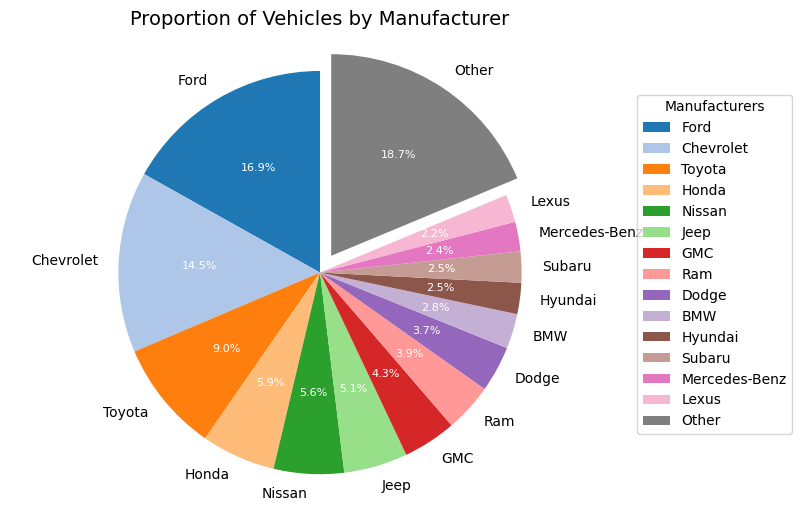
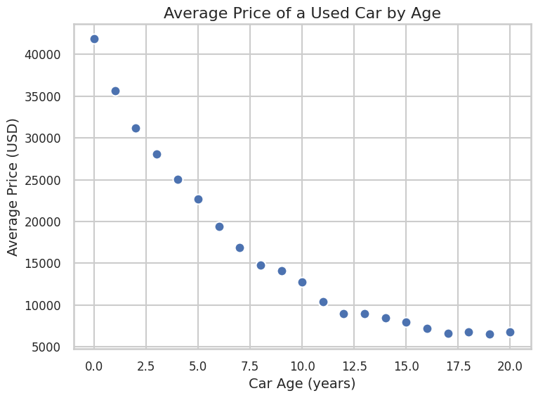
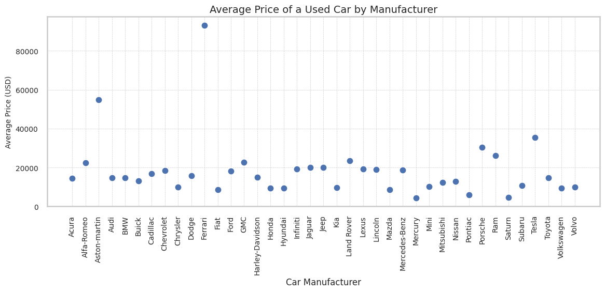
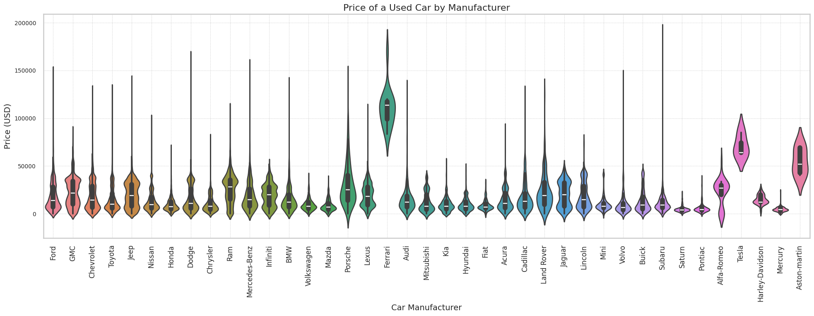
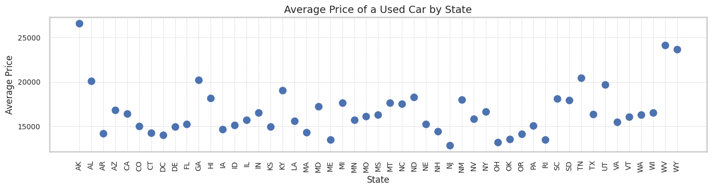
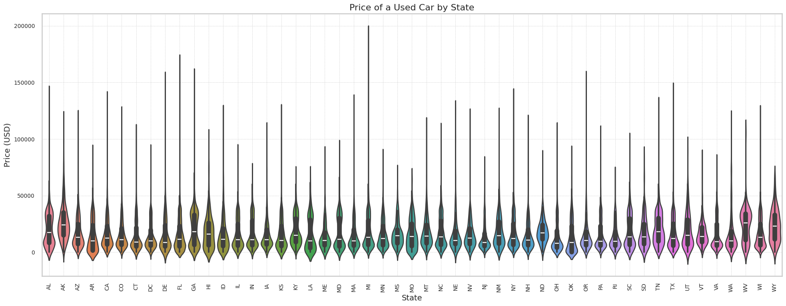
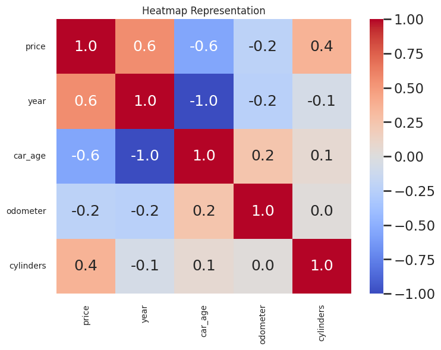
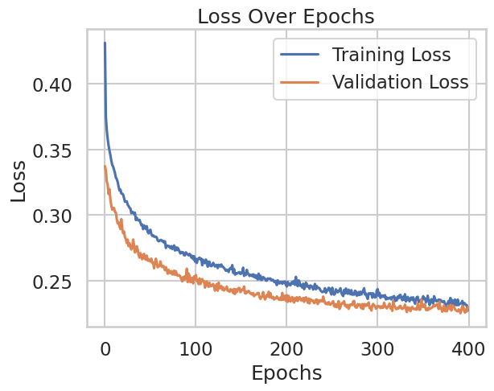

Collaborators: Aarmabh Sanoria, Emily Sheridan, Lucia Soto Garcia, Ammar Khawaja
Daily travel in the US is largely dominated by cars. Cars are a necessary part of American life due to the current state of public transportation. Very few places in America can boast adequate public transportation, and 45% of Americas have no access to public transportation (Source: APTA). As a result, the American commute is primarily made via car, with 76% of American commuters using a personal vehicle to get to their workplace (Source: World Economic Forum). For these Americans, their livelihood is tied to access to a car.
In recent years, the spike in prices of new cars and trucks has caused many Americans to look towards buying used cars when the need for a new car arises (Sources: CBS, Major World). In 2023, the average price of a new car had increased by around $10,000 since 2020, largely because of inflation and manufacturing delays related to the COVID-19 pandemic (Source: Consumer Reports). Many manufacturers have also divested from their more affordable models in favor of models that produce more profit (Source: Consumer Reports).
Used car prices have also risen to meet the growing demand, but these vehicles are still seen by many as a more affordable and adequate alternative to a new vehicle.
In our project, we hope to develop a price predictor for used cars based on a combination of various features, including the location of car (state), the year the car was built, the manufacturer, the number of miled on the car (odometer), etc. This price predictor could be useful for people looking to sell used cars to ensure (1) they are asking a reasonable price for their car and (2) they are receiving resonable offers for their car to avoid low-balling from buyers. It could also be useful for people looking to buy a used car to ensure that they are not taken advantage of by sellers hiking up the price of their car.
Over this tutorial we will be going through the Data Science Lifecycle as following:
Data Collection
We will start by including some libraries for our analysis
import numpy as np
import pandas as pd
import os
import datetime as dt
from dateutil import parser
import random
import matplotlib.pyplot as plt
import seaborn as sns
from sklearn.model_selection import train_test_split, GridSearchCV
import statsmodels.api as sm
from sklearn.linear_model import Lasso
from sklearn.metrics import mean_squared_error, r2_score, accuracy_score
from sklearn.neighbors import KNeighborsRegressor
from sklearn.ensemble import RandomForestRegressor
from sklearn import preprocessing
from sklearn.preprocessing import LabelEncoder, StandardScaler
from tensorflow import keras
from keras import layers
from keras import regularizers
from keras.layers import Dense, Dropout
from keras.models import Sequential
from joblib import parallel_backend
import gcThe initial phase of our analysis involves data extraction. Our focus will be on the collaboration between different regions, so it would be beneficial to gather some general data on these regions, such as the type of vehicles commonly found there. Although our current analysis does not consider the state of the region, it might be intriguing to incorporate this variable in future studies.
All the data was sourced from the following link which contains information about various vehicles, their conditions, prices, and other relevant details.
Data was downloaded from https://www.kaggle.com/datasets/austinreese/craigslist-carstrucks-data
data = pd.read_csv('data.csv', on_bad_lines='warn')Now that we have our dataframe we need to clean our dataset of vehicle information. The primary focus is on correcting inconsistencies in the column, replacing missing data, and removing unnecessary columns, thereby preparing the data for further analysis or modeling.
We'll begin by limiting our data to cars made in 2001 or later. This was chosen because the average year in our dataset is 2011 and the standard deviation is ~9.5 years. Rounding up to 10 years, one standard deviation below the mean is 2001. Limiting our data to cars manufactured after 2001 maintains 92.97% of our original data. We also exclude cars produced in 2022 since we are interested in used cars. Moreover, we also removed some columns whose information was not particularly relevant.
data.drop(columns=['id','VIN', 'paint_color', 'lat', 'long', 'size'], inplace=True)
data.describe()| price | year | odometer | |
|---|---|---|---|
| count | 4.268530e+05 | 425675.000000 | 4.224800e+05 |
| mean | 7.520308e+04 | 2011.235191 | 9.804333e+04 |
| std | 1.218267e+07 | 9.452120 | 2.138815e+05 |
| min | 0.000000e+00 | 1900.000000 | 0.000000e+00 |
| 25% | 5.900000e+03 | 2008.000000 | 3.770400e+04 |
| 50% | 1.395000e+04 | 2013.000000 | 8.554800e+04 |
| 75% | 2.648800e+04 | 2017.000000 | 1.335425e+05 |
| max | 3.736929e+09 | 2022.000000 | 1.000000e+07 |
We now drop rows with missing data from our data frame. This still leaves us with plenty of data to work with and avoids a false perception of data.
data = data[data['year']>2000]
data = data[data['year']<2022]
data = data.dropna()Because the type of information given by region varies (some values are cities, some are states, some are parts of states, some are large geographic regions, etc.), we will not use region in our data analysis. Instead, we will use state to determine the geographic location of the vehicle. Here, we drop region and format state values to be uppercase, as is the standard for state abbreviations.
# Dropping region & formatting state
data.drop('region', axis=1, inplace=True)
data['state'] = data['state'].apply(lambda x: x.upper())<ipython-input-5-df9f8385ac89>:2: SettingWithCopyWarning:
A value is trying to be set on a copy of a slice from a DataFrame
See the caveats in the documentation: https://pandas.pydata.org/pandas-docs/stable/user_guide/indexing.html#returning-a-view-versus-a-copy
data.drop('region', axis=1, inplace=True)
<ipython-input-5-df9f8385ac89>:3: SettingWithCopyWarning:
A value is trying to be set on a copy of a slice from a DataFrame.
Try using .loc[row_indexer,col_indexer] = value instead
See the caveats in the documentation: https://pandas.pydata.org/pandas-docs/stable/user_guide/indexing.html#returning-a-view-versus-a-copy
data['state'] = data['state'].apply(lambda x: x.upper())
We now want ensure consistent formatting of year and posting date.
# Set format of year and posting_date
data['year'] = pd.to_datetime(data['year'], format='%Y').dt.strftime('%Y')
data['posting_date'] = pd.to_datetime(data['posting_date'], utc=True, format='mixed').dt.strftime('%m-%d-%Y')We next add a column for car age, which is calculated by subtracting the model year from the year of posting (2021). If the model is 2022, the car age is set to 0. If the age is unknown, it is also set to 0.
# Calculate car age based on posting date and year
data.loc[:, 'car_age'] = data['posting_date'].str[-4:].astype(float) - data['year'].astype(float)
# Replacing cars with negative or no age to have age of 0
data['car_age'] = data['car_age'].replace(-1.0, 0.0)
data['car_age'] = data['car_age'].replace(np.nan, 0.0)
#Rearranging the columns for organization
data = data[['state', 'price', 'year', 'car_age', 'manufacturer', 'model', 'condition', 'odometer', 'title_status', 'transmission', 'posting_date','cylinders', 'fuel', 'drive', 'type']]Now we will format the cylinder column to contain only an integer representing the number of cylinders.
data = data[data['cylinders'] != 'other']
data.loc[:,'cylinders'] = data['cylinders'].apply(lambda x: int(x.split(' ')[0]))
data['cylinders'] = data['cylinders'].astype(int)We now move on to properly format the manufacturer column to capitalize the brand names.
# Format manufacturers
def replace(a,b):
data["manufacturer"].replace(a,b,inplace=True)
# Hyphonated/Two Word Names
replace('mercedes-benz','Mercedes-Benz')
replace('alfa-romeo','Alfa-Romeo')
replace('harley-davidson','Harley-Davidson')
replace('aston-marin','Aston-Martin')
replace('land rover','Land Rover')
# All Caps
replace('gmc', "GMC")
replace('bmw', 'BMW')
# Based on car models, 'rover' is 'land rover'
replace('rover','Land Rover')
# Capitalize every manufacturer that is not already formatted
data["manufacturer"] = data["manufacturer"].astype(str).apply(lambda x: x.capitalize() if x and not x[0].isupper() else x)Next, we'll ensure that the dtype of year is an integer.
data.dtypesstate object
price int64
year object
car_age float64
manufacturer object
model object
condition object
odometer float64
title_status object
transmission object
posting_date object
cylinders int64
fuel object
drive object
type object
dtype: objectdef data_type_chnge(ch):
data[ch] = pd.to_numeric(data[ch], errors='coerce')
data[ch].fillna(0, inplace=True)
data[ch] = data[ch].astype(int)
chn= ['year']
for i in chn:
data_type_chnge(i)We noticed a handful of outliers with prices that are beyond reasonable. We drop these outliers here.
data[data['price'] > 1000000] # Outliers
data = data[data['price'] < 1000000] # Drop the outliersAfter cleaning, we are left with 115,497 data observations. Our dataframe is the following format:
print('Dimensions: {} x {}'.format(data.shape[0], data.shape[1]))
data.head(5)Dimensions: 115497 x 15
| state | price | year | car_age | manufacturer | model | condition | odometer | title_status | transmission | posting_date | cylinders | fuel | drive | type | |
|---|---|---|---|---|---|---|---|---|---|---|---|---|---|---|---|
| 4 | AL | 15000 | 2013 | 8.0 | Ford | f-150 xlt | excellent | 128000.0 | clean | automatic | 05-03-2021 | 6 | gas | rwd | truck |
| 5 | AL | 27990 | 2012 | 9.0 | GMC | sierra 2500 hd extended cab | good | 68696.0 | clean | other | 05-03-2021 | 8 | gas | 4wd | pickup |
| 6 | AL | 34590 | 2016 | 5.0 | Chevrolet | silverado 1500 double | good | 29499.0 | clean | other | 05-03-2021 | 6 | gas | 4wd | pickup |
| 7 | AL | 35000 | 2019 | 2.0 | Toyota | tacoma | excellent | 43000.0 | clean | automatic | 05-03-2021 | 6 | gas | 4wd | truck |
| 8 | AL | 29990 | 2016 | 5.0 | Chevrolet | colorado extended cab | good | 17302.0 | clean | other | 05-03-2021 | 6 | gas | 4wd | pickup |
Data visualization plays a crucial role in understanding the underlying patterns and insights within our dataset. By visually representing the data, we can more easily identify trends, outliers, and distributions that might not be apparent from raw data alone. In this section, we explore various aspects of the used car market, including manufacturer popularity, price depreciation by car age, and regional price variations. Each visualization is designed to help us draw meaningful conclusions that can inform both sellers and buyers in the used car market.
Proportion of Vehicles by Manufacturer
manufacturer_counts = data['manufacturer'].value_counts()
threshold = 0.02 * manufacturer_counts.sum()
other_count = manufacturer_counts[manufacturer_counts < threshold].sum()
manufacturer_counts = manufacturer_counts[manufacturer_counts >= threshold]
manufacturer_counts['Other'] = other_count
colors = sns.color_palette('tab20', len(manufacturer_counts))
fig, ax = plt.subplots(figsize=(8, 6))
wedges, texts, autotexts = ax.pie(manufacturer_counts, labels=manufacturer_counts.index, autopct='%1.1f%%', startangle=90, colors=colors, explode=[0.1 if i == 'Other' else 0 for i in manufacturer_counts.index])
for text in texts:
text.set_fontsize(10)
for autotext in autotexts:
autotext.set_fontsize(8)
autotext.set_color('white')
ax.axis('equal')
plt.title('Proportion of Vehicles by Manufacturer', fontsize=14)
plt.legend(wedges, manufacturer_counts.index, title="Manufacturers", loc="center left", bbox_to_anchor=(1, 0, 0.5, 1))
plt.show()
This visualization is a pie chart that shows the proportion of vehicles listed for sale by different manufacturers in 2021. This helps us understand which car manufacturers dominate the used car market. A significant presence in the market can indicate popular brands that are preferred by consumers for their reliability, resale value, or availability of parts. From the pie chart, it is evident that Ford and Chevrolet are the most popular manufacturers, indicating a strong preference for these brands among used car buyers. This popularity might be attributed to their reputation for reliability and the wide availability of parts and services.
Average Price of a Used Car by Age
# Calculate the average price of a car for each age group
avgs = data.groupby("car_age").describe()
avg_prices = avgs['price']['mean']
sns.set(style="whitegrid", context="talk")
plt.figure(figsize=(8, 6))
sns.scatterplot(x=avg_prices.index, y=avg_prices, s=100, color='b', edgecolor='w', linewidth=1.5)
plt.xlabel('Car Age (years)', fontsize=14)
plt.ylabel('Average Price (USD)', fontsize=14)
plt.title('Average Price of a Used Car by Age', fontsize=16)
plt.grid(True)
plt.xticks(fontsize=12)
plt.yticks(fontsize=12)
plt.tight_layout()
plt.show()
This scatter plot illustrates how the age of a car impacts its market price, providing insights into the depreciation rate of cars. The plot clearly shows that as cars age, their average price tends to decrease. This trend underscores the importance of considering car age when setting prices or making purchase decisions, as older cars generally offer more value for money but might come with higher maintenance costs.
Average Price of a Used Car by Manufacturer
# Calculate the price statistics of a car for each manufacturer
avgs = data.groupby("manufacturer").describe()
avg_prices = avgs['price']['mean']
sns.set(style="whitegrid", context="talk")
plt.figure(figsize=(12, 6))
sns.scatterplot(x=avg_prices.index, y=avg_prices, s=100, color='b', edgecolor='w', linewidth=1.5)
plt.xlabel('Car Manufacturer', fontsize=12)
plt.xticks(rotation=90, fontsize=10)
plt.ylabel('Average Price (USD)', fontsize=10)
plt.yticks(fontsize=10)
plt.title('Average Price of a Used Car by Manufacturer', fontsize=14)
plt.grid(True, which='both', linestyle='--', linewidth=0.5)
plt.tight_layout()
plt.show()
This scatter plot shows the average price of used cars by manufacturer, highlighting the premium associated with different brands. It appears that each manufacturer has a distinct set of prices. Additionally, the visualization reveals that luxury brands like Ferrari and Aston Martin command higher average prices in the used car market. It is also interesting to note that most cars from various brands can be bought for under or around the $20,000 mark.
A violin plot will give us an idea of how the data is distributed for each manufacturer. For more detailed information on using and making violin plots, see this helpful guide to violin plots.
# filtering to handle kernel density estimation used in seaborn
filtered_data = data[(data['price'] > 100) | ((data['manufacturer'] != 'Ferrari') & (data['manufacturer'] != 'Tesla'))]
# Create a violin plot for prices by manufacturer
sns.set(style="whitegrid", context="talk")
plt.figure(figsize=(20, 8))
palette = sns.color_palette("husl", len(filtered_data['manufacturer'].unique()))
sns.violinplot(data=filtered_data, x='manufacturer', y='price', hue='manufacturer', palette=palette, dodge=False, legend=False)
plt.xlabel('Car Manufacturer', fontsize=14)
plt.xticks(rotation=90, fontsize=12)
plt.ylabel('Price (USD)', fontsize=14)
plt.yticks(fontsize=10)
plt.title('Price of a Used Car by Manufacturer', fontsize=16)
plt.grid(True, which='both', linestyle='--', linewidth=0.5)
plt.tight_layout()
plt.show()
The manufacturers have different distributions of prices, although some manufacturers (e.g. Volkswagen and Mazda) have similar distributions. Ferrari and Aston Martin have a wider distribution at higher price points, indicating that their cars are generally more expensive.The boxes for these brands are positioned higher on the price scale, indicating higher median prices. Porsche and Mercedes-Benz also show a significant spread towards higher prices, though not as extreme as Ferrari and Aston Martin. This indicates that while they have some more affordable models, they also have many high-end, expensive cars. Ford, Chevrolet, Toyota, and Honda have a more concentrated distribution around lower price points, typically under $20,000. The violins are wider in the lower price range, indicating a higher density of cars in this range. This suggests that these brands are more accessible to a broader range of buyers. The violin for Tesla is intresting which shows a concentration of prices in the mid to high range, reflecting the premium nature of their electric vehicles.
Average Price of a Used Car by State
# Calculate the price statistics of a car for each state
avgs = data.groupby("state").describe()
# Plot average price for each state
plt.figure(figsize=(14, 4))
plt.scatter(avgs.index, avgs['price']['mean'])
plt.xlabel('State', fontsize=12)
plt.xticks(rotation=90, fontsize=10)
plt.ylabel('Average Price', fontsize=12)
plt.yticks(fontsize=10)
plt.title('Average Price of a Used Car by State', fontsize=14)
plt.grid(True, which='both', linestyle='--', linewidth=0.5)
plt.tight_layout()
plt.show()
The scatter plot reveals significant regional variations in the average price of used cars. States like Alaska and Wyoming have higher average prices, possibly due to supply constraints and higher transportation costs. In contrast, states like Michigan and Ohio have lower average prices, likely influenced by higher supply and lower demand. Understanding these regional differences can help buyers and sellers make more informed decisions based on local market conditions.
Now lets create a violin plot for prices by state
# Create a violin plot for prices by state
sns.set(style="whitegrid", context="talk")
plt.figure(figsize=(20, 8))
palette = sns.color_palette("husl", len(data['state'].unique()))
sns.violinplot(data=data, x='state', y='price', hue='state', palette=palette, dodge=False, legend=False)
plt.xlabel('State', fontsize=14)
plt.xticks(rotation=90, fontsize=10)
plt.ylabel('Price (USD)', fontsize=14)
plt.yticks(fontsize=10)
plt.title('Price of a Used Car by State', fontsize=16)
plt.grid(True, which='both', linestyle='--', linewidth=0.5)
plt.tight_layout()
plt.show()
The violin plots, combined with the box plots inside them, provide a comprehensive view of the price distributions for used cars across different states. States like Alaska and Wyoming have higher median prices and greater variance, indicating a higher density of expensive cars. In contrast, states like Michigan and Ohio have lower median prices and less variance, indicating a higher density of affordable cars. This aslo shows us that the bulk of the data for each state has a price of under 50,000 USD, but each state has varying levels of variation in the upper extreme of > 50,000 USD.
We are interested in correlation between numeric variables. We will now visualize correlation between numeric data.
# Select numeric data
num_data = data.select_dtypes(include=[np.number])
# Compute pairwise correlation between columns
mat = pd.DataFrame(num_data).corr()
mat| price | year | car_age | odometer | cylinders | |
|---|---|---|---|---|---|
| price | 1.000000 | 0.555635 | -0.555635 | -0.221816 | 0.364257 |
| year | 0.555635 | 1.000000 | -1.000000 | -0.249332 | -0.063077 |
| car_age | -0.555635 | -1.000000 | 1.000000 | 0.249332 | 0.063077 |
| odometer | -0.221816 | -0.249332 | 0.249332 | 1.000000 | 0.016222 |
| cylinders | 0.364257 | -0.063077 | 0.063077 | 0.016222 | 1.000000 |
plt.figure(figsize=(8, 6))
sns.heatmap(mat, annot=True, fmt=".1f", cmap='coolwarm', cbar=True)
plt.title('Heatmap Representation', fontsize=12)
plt.xticks(fontsize=10)
plt.yticks(fontsize=10)
plt.show()
The heatmap provides a visual representation of the correlations between different numeric variables related to used cars. Here, we notice a moderate positive correlation between price and year, as well as between cylinders and price. There is also a moderate negative correlation between price and car age, and weak correlations between price and odometer. Understanding these correlations further helps in predicting car prices and understanding the relationships between different car attributes.
We would like to train a model to predict a used car's price given the car's year, odometer, number of cylinders, manufacturer, state, condition, fuel-type, drive-type, and vehicle-type. Below, we fit a linear model using OLS and Lasso Regression, a KNN model, a Random Forest Model, and a Neural Network. We collected the score results for all of them so we could conclude which one is our most efficient model for the data that we are working with.
We'll begin by organizing the data for our model and standardizing numeric values.
train_df = data[['price', 'year', 'odometer', 'cylinders', 'manufacturer', 'state', 'condition', 'fuel', 'drive', 'type']]
# Standardize numeric data
numeric_cols = train_df.select_dtypes(include=['int64', 'float64']).columns
scaler = StandardScaler()
train_df.loc[:, numeric_cols] = scaler.fit_transform(train_df[numeric_cols])# Create df to hold model data
model_data = train_df
model_data.head()| price | year | odometer | cylinders | manufacturer | state | condition | fuel | drive | type | |
|---|---|---|---|---|---|---|---|---|---|---|
| 4 | -0.080792 | 0.235819 | 0.133530 | 0.040827 | Ford | AL | excellent | gas | rwd | truck |
| 5 | 0.875440 | 0.033917 | -0.230876 | 1.300959 | GMC | AL | good | gas | 4wd | pickup |
| 6 | 1.361285 | 0.841524 | -0.471730 | 0.040827 | Chevrolet | AL | good | gas | 4wd | pickup |
| 7 | 1.391466 | 1.447230 | -0.388770 | 0.040827 | Toyota | AL | excellent | gas | 4wd | truck |
| 8 | 1.022666 | 0.841524 | -0.546677 | 0.040827 | Chevrolet | AL | good | gas | 4wd | pickup |
# Define a function to split data into test and training data
def split(X, y):
# 80-20 ratio of train to test
X_train, X_test, y_train, y_test = train_test_split(X, y, test_size=0.2, random_state=10) # Set a random state so the split is reproducible
return X_train, X_test, y_train, y_testNow that we've gathered, refined, and analyzed our data, it's time to delve into constructing various models based off this data. We created linear regression, lasso regression, KNN, and neural network models to analyze the factors influencing the American used vehicle market. We'll utilize our independent variables such as vehicle condition, manufacturer, engine, and other factors, to develop these various models aimed at uncovering their correlations with a used vehicle's market value.
We start with a multi-variate linear regression model, trained using OLS (Ordinary Least Squares). For more information on OLS and linear regression, see this helpful guide to understanding OLS regression.
X = model_data.drop('price', axis=1)
y = model_data['price']
X_train, X_test, y_train, y_test = split(X, y)train = X_train
train['price'] = y_traintrain.head()| year | odometer | cylinders | manufacturer | state | condition | fuel | drive | type | price | |
|---|---|---|---|---|---|---|---|---|---|---|
| 200584 | 0.639622 | -0.360007 | 1.300959 | Dodge | MI | excellent | gas | rwd | coupe | 1.535380 |
| 220065 | 0.437721 | 0.103919 | 0.040827 | Jeep | MO | excellent | gas | 4wd | SUV | 0.506860 |
| 89817 | -1.783200 | 1.276447 | 0.040827 | Toyota | DC | good | gas | fwd | mini-van | -1.037761 |
| 207496 | -0.773690 | -0.201498 | 1.300959 | Chevrolet | MI | good | gas | rwd | coupe | 0.802489 |
| 135972 | 1.043426 | -0.347896 | 1.300959 | GMC | ID | excellent | gas | 4wd | truck | 1.896451 |
Here, we train the model using training data.
model = sm.formula.ols(formula="price ~ year + odometer + cylinders + manufacturer + state + condition + fuel + drive + type", data=train)
model = model.fit()
model.summary()| Dep. Variable: | price | R-squared: | 0.603 |
|---|---|---|---|
| Model: | OLS | Adj. R-squared: | 0.602 |
| Method: | Least Squares | F-statistic: | 1228. |
| Date: | Fri, 17 May 2024 | Prob (F-statistic): | 0.00 |
| Time: | 19:27:01 | Log-Likelihood: | -88079. |
| No. Observations: | 92397 | AIC: | 1.764e+05 |
| Df Residuals: | 92282 | BIC: | 1.775e+05 |
| Df Model: | 114 | ||
| Covariance Type: | nonrobust |
| coef | std err | t | P>|t| | [0.025 | 0.975] | |
|---|---|---|---|---|---|---|
| Intercept | 1.3165 | 0.032 | 40.733 | 0.000 | 1.253 | 1.380 |
| manufacturer[T.Alfa-Romeo] | 0.1905 | 0.125 | 1.524 | 0.127 | -0.054 | 0.435 |
| manufacturer[T.Aston-martin] | 2.2805 | 0.315 | 7.235 | 0.000 | 1.663 | 2.898 |
| manufacturer[T.Audi] | -0.0444 | 0.027 | -1.624 | 0.104 | -0.098 | 0.009 |
| manufacturer[T.BMW] | -0.1404 | 0.023 | -6.027 | 0.000 | -0.186 | -0.095 |
| manufacturer[T.Buick] | -0.0885 | 0.026 | -3.345 | 0.001 | -0.140 | -0.037 |
| manufacturer[T.Cadillac] | -0.0367 | 0.026 | -1.412 | 0.158 | -0.088 | 0.014 |
| manufacturer[T.Chevrolet] | -0.1901 | 0.020 | -9.372 | 0.000 | -0.230 | -0.150 |
| manufacturer[T.Chrysler] | -0.2976 | 0.025 | -11.948 | 0.000 | -0.346 | -0.249 |
| manufacturer[T.Dodge] | -0.3463 | 0.022 | -15.442 | 0.000 | -0.390 | -0.302 |
| manufacturer[T.Ferrari] | 5.4557 | 0.150 | 36.429 | 0.000 | 5.162 | 5.749 |
| manufacturer[T.Fiat] | -0.5809 | 0.058 | -9.966 | 0.000 | -0.695 | -0.467 |
| manufacturer[T.Ford] | -0.2195 | 0.020 | -10.833 | 0.000 | -0.259 | -0.180 |
| manufacturer[T.GMC] | -0.1329 | 0.022 | -5.995 | 0.000 | -0.176 | -0.089 |
| manufacturer[T.Harley-Davidson] | -0.1294 | 0.142 | -0.911 | 0.362 | -0.408 | 0.149 |
| manufacturer[T.Honda] | -0.0552 | 0.021 | -2.602 | 0.009 | -0.097 | -0.014 |
| manufacturer[T.Hyundai] | -0.2788 | 0.023 | -11.914 | 0.000 | -0.325 | -0.233 |
| manufacturer[T.Infiniti] | -0.1473 | 0.026 | -5.620 | 0.000 | -0.199 | -0.096 |
| manufacturer[T.Jaguar] | 0.0919 | 0.043 | 2.114 | 0.034 | 0.007 | 0.177 |
| manufacturer[T.Jeep] | -0.0333 | 0.022 | -1.529 | 0.126 | -0.076 | 0.009 |
| manufacturer[T.Kia] | -0.3327 | 0.025 | -13.577 | 0.000 | -0.381 | -0.285 |
| manufacturer[T.Land Rover] | 0.3149 | 0.039 | 8.052 | 0.000 | 0.238 | 0.392 |
| manufacturer[T.Lexus] | 0.1793 | 0.024 | 7.508 | 0.000 | 0.133 | 0.226 |
| manufacturer[T.Lincoln] | 0.0306 | 0.029 | 1.072 | 0.284 | -0.025 | 0.087 |
| manufacturer[T.Mazda] | -0.1721 | 0.027 | -6.321 | 0.000 | -0.225 | -0.119 |
| manufacturer[T.Mercedes-Benz] | 0.0545 | 0.024 | 2.283 | 0.022 | 0.008 | 0.101 |
| manufacturer[T.Mercury] | -0.1997 | 0.042 | -4.761 | 0.000 | -0.282 | -0.118 |
| manufacturer[T.Mini] | -0.1239 | 0.036 | -3.439 | 0.001 | -0.194 | -0.053 |
| manufacturer[T.Mitsubishi] | -0.2581 | 0.031 | -8.302 | 0.000 | -0.319 | -0.197 |
| manufacturer[T.Nissan] | -0.3071 | 0.021 | -14.442 | 0.000 | -0.349 | -0.265 |
| manufacturer[T.Pontiac] | -0.0804 | 0.033 | -2.414 | 0.016 | -0.146 | -0.015 |
| manufacturer[T.Porsche] | 0.9402 | 0.048 | 19.737 | 0.000 | 0.847 | 1.034 |
| manufacturer[T.Ram] | -0.1985 | 0.023 | -8.693 | 0.000 | -0.243 | -0.154 |
| manufacturer[T.Saturn] | -0.0355 | 0.039 | -0.909 | 0.363 | -0.112 | 0.041 |
| manufacturer[T.Subaru] | -0.1418 | 0.024 | -5.827 | 0.000 | -0.189 | -0.094 |
| manufacturer[T.Tesla] | 1.1418 | 0.285 | 4.002 | 0.000 | 0.583 | 1.701 |
| manufacturer[T.Toyota] | 0.0568 | 0.021 | 2.747 | 0.006 | 0.016 | 0.097 |
| manufacturer[T.Volkswagen] | -0.2453 | 0.025 | -9.956 | 0.000 | -0.294 | -0.197 |
| manufacturer[T.Volvo] | -0.0790 | 0.032 | -2.499 | 0.012 | -0.141 | -0.017 |
| state[T.AL] | -0.4199 | 0.031 | -13.735 | 0.000 | -0.480 | -0.360 |
| state[T.AR] | -0.8555 | 0.032 | -26.446 | 0.000 | -0.919 | -0.792 |
| state[T.AZ] | -0.4759 | 0.028 | -17.007 | 0.000 | -0.531 | -0.421 |
| state[T.CA] | -0.4366 | 0.024 | -17.849 | 0.000 | -0.485 | -0.389 |
| state[T.CO] | -0.4541 | 0.028 | -16.163 | 0.000 | -0.509 | -0.399 |
| state[T.CT] | -0.5946 | 0.030 | -20.119 | 0.000 | -0.653 | -0.537 |
| state[T.DC] | -0.4880 | 0.035 | -13.949 | 0.000 | -0.557 | -0.419 |
| state[T.DE] | -0.3920 | 0.046 | -8.442 | 0.000 | -0.483 | -0.301 |
| state[T.FL] | -0.6227 | 0.025 | -25.011 | 0.000 | -0.671 | -0.574 |
| state[T.GA] | -0.4152 | 0.029 | -14.176 | 0.000 | -0.473 | -0.358 |
| state[T.HI] | -0.3255 | 0.038 | -8.610 | 0.000 | -0.400 | -0.251 |
| state[T.IA] | -0.4976 | 0.027 | -18.672 | 0.000 | -0.550 | -0.445 |
| state[T.ID] | -0.4919 | 0.029 | -16.752 | 0.000 | -0.549 | -0.434 |
| state[T.IL] | -0.5125 | 0.027 | -18.739 | 0.000 | -0.566 | -0.459 |
| state[T.IN] | -0.4607 | 0.028 | -16.336 | 0.000 | -0.516 | -0.405 |
| state[T.KS] | -0.6185 | 0.028 | -21.719 | 0.000 | -0.674 | -0.563 |
| state[T.KY] | -0.4060 | 0.030 | -13.543 | 0.000 | -0.465 | -0.347 |
| state[T.LA] | -0.8014 | 0.036 | -22.124 | 0.000 | -0.872 | -0.730 |
| state[T.MA] | -0.5657 | 0.027 | -20.909 | 0.000 | -0.619 | -0.513 |
| state[T.MD] | -0.4581 | 0.032 | -14.321 | 0.000 | -0.521 | -0.395 |
| state[T.ME] | -0.6230 | 0.035 | -18.020 | 0.000 | -0.691 | -0.555 |
| state[T.MI] | -0.4778 | 0.026 | -18.467 | 0.000 | -0.528 | -0.427 |
| state[T.MN] | -0.5215 | 0.027 | -19.081 | 0.000 | -0.575 | -0.468 |
| state[T.MO] | -0.5754 | 0.031 | -18.845 | 0.000 | -0.635 | -0.516 |
| state[T.MS] | -0.4788 | 0.046 | -10.510 | 0.000 | -0.568 | -0.390 |
| state[T.MT] | -0.4202 | 0.032 | -13.111 | 0.000 | -0.483 | -0.357 |
| state[T.NC] | -0.4641 | 0.026 | -17.879 | 0.000 | -0.515 | -0.413 |
| state[T.ND] | -0.5496 | 0.053 | -10.452 | 0.000 | -0.653 | -0.447 |
| state[T.NE] | -0.4110 | 0.046 | -8.954 | 0.000 | -0.501 | -0.321 |
| state[T.NH] | -0.5309 | 0.035 | -15.330 | 0.000 | -0.599 | -0.463 |
| state[T.NJ] | -0.5108 | 0.027 | -18.776 | 0.000 | -0.564 | -0.457 |
| state[T.NM] | -0.4952 | 0.032 | -15.642 | 0.000 | -0.557 | -0.433 |
| state[T.NV] | -0.3980 | 0.035 | -11.362 | 0.000 | -0.467 | -0.329 |
| state[T.NY] | -0.4960 | 0.025 | -19.729 | 0.000 | -0.545 | -0.447 |
| state[T.OH] | -0.5992 | 0.025 | -23.556 | 0.000 | -0.649 | -0.549 |
| state[T.OK] | -0.9634 | 0.028 | -34.657 | 0.000 | -1.018 | -0.909 |
| state[T.OR] | -0.3852 | 0.027 | -14.242 | 0.000 | -0.438 | -0.332 |
| state[T.PA] | -0.4809 | 0.026 | -18.439 | 0.000 | -0.532 | -0.430 |
| state[T.RI] | -0.5417 | 0.034 | -15.890 | 0.000 | -0.608 | -0.475 |
| state[T.SC] | -0.5264 | 0.029 | -18.178 | 0.000 | -0.583 | -0.470 |
| state[T.SD] | -0.5115 | 0.043 | -11.803 | 0.000 | -0.596 | -0.427 |
| state[T.TN] | -0.4181 | 0.027 | -15.429 | 0.000 | -0.471 | -0.365 |
| state[T.TX] | -0.5711 | 0.025 | -22.409 | 0.000 | -0.621 | -0.521 |
| state[T.UT] | -0.2511 | 0.049 | -5.091 | 0.000 | -0.348 | -0.154 |
| state[T.VA] | -0.4369 | 0.027 | -16.240 | 0.000 | -0.490 | -0.384 |
| state[T.VT] | -0.5315 | 0.030 | -17.557 | 0.000 | -0.591 | -0.472 |
| state[T.WA] | -0.3058 | 0.030 | -10.144 | 0.000 | -0.365 | -0.247 |
| state[T.WI] | -0.4736 | 0.026 | -18.172 | 0.000 | -0.525 | -0.423 |
| state[T.WV] | -0.3404 | 0.048 | -7.143 | 0.000 | -0.434 | -0.247 |
| state[T.WY] | -0.3941 | 0.058 | -6.841 | 0.000 | -0.507 | -0.281 |
| condition[T.fair] | -0.0706 | 0.015 | -4.691 | 0.000 | -0.100 | -0.041 |
| condition[T.good] | 0.1512 | 0.005 | 31.817 | 0.000 | 0.142 | 0.161 |
| condition[T.like new] | 0.1415 | 0.007 | 20.266 | 0.000 | 0.128 | 0.155 |
| condition[T.new] | 0.2419 | 0.030 | 8.153 | 0.000 | 0.184 | 0.300 |
| condition[T.salvage] | -0.2049 | 0.048 | -4.288 | 0.000 | -0.299 | -0.111 |
| fuel[T.electric] | -0.6633 | 0.075 | -8.859 | 0.000 | -0.810 | -0.517 |
| fuel[T.gas] | -0.8173 | 0.010 | -79.934 | 0.000 | -0.837 | -0.797 |
| fuel[T.hybrid] | -0.8506 | 0.022 | -38.259 | 0.000 | -0.894 | -0.807 |
| fuel[T.other] | -0.6765 | 0.018 | -37.006 | 0.000 | -0.712 | -0.641 |
| drive[T.fwd] | -0.2047 | 0.007 | -28.085 | 0.000 | -0.219 | -0.190 |
| drive[T.rwd] | -0.0233 | 0.007 | -3.340 | 0.001 | -0.037 | -0.010 |
| type[T.bus] | -0.4298 | 0.057 | -7.526 | 0.000 | -0.542 | -0.318 |
| type[T.convertible] | 0.5819 | 0.016 | 36.026 | 0.000 | 0.550 | 0.614 |
| type[T.coupe] | 0.4497 | 0.011 | 42.320 | 0.000 | 0.429 | 0.471 |
| type[T.hatchback] | -0.0172 | 0.013 | -1.369 | 0.171 | -0.042 | 0.007 |
| type[T.mini-van] | -0.0237 | 0.015 | -1.562 | 0.118 | -0.053 | 0.006 |
| type[T.offroad] | 0.3700 | 0.041 | 9.032 | 0.000 | 0.290 | 0.450 |
| type[T.other] | 0.4613 | 0.013 | 35.771 | 0.000 | 0.436 | 0.487 |
| type[T.pickup] | 0.3509 | 0.009 | 39.562 | 0.000 | 0.334 | 0.368 |
| type[T.sedan] | -0.0576 | 0.007 | -8.284 | 0.000 | -0.071 | -0.044 |
| type[T.truck] | 0.2246 | 0.009 | 25.804 | 0.000 | 0.208 | 0.242 |
| type[T.van] | 0.0404 | 0.014 | 2.911 | 0.004 | 0.013 | 0.068 |
| type[T.wagon] | -0.0903 | 0.014 | -6.396 | 0.000 | -0.118 | -0.063 |
| year | 0.5380 | 0.002 | 228.278 | 0.000 | 0.533 | 0.543 |
| odometer | -0.0952 | 0.002 | -40.465 | 0.000 | -0.100 | -0.091 |
| cylinders | 0.2304 | 0.003 | 73.514 | 0.000 | 0.224 | 0.236 |
| Omnibus: | 24476.739 | Durbin-Watson: | 1.997 |
|---|---|---|---|
| Prob(Omnibus): | 0.000 | Jarque-Bera (JB): | 686367.240 |
| Skew: | 0.676 | Prob(JB): | 0.00 |
| Kurtosis: | 16.284 | Cond. No. | 240. |
This has a low p-value for all of our predictors, except a vehicle type of hatchback or mini-van and a handful of manufacturers. Let's see if we can get more information from the MSE, RMSE, and R2 statistics for this model.
# Calculate MSE
msetrain = mean_squared_error(y_train, model.predict(X_train))
msetest = mean_squared_error(y_test, model.predict(X_test))
# Calculate RMSE
rmsetrain = np.sqrt(msetrain)
rmsetest = np.sqrt(msetest)
# Calculate R^2
r2train = r2_score(y_train, model.predict(X_train))
r2test = r2_score(y_test, model.predict(X_test))# Print MSE RMSE and R^2
print(f"MSE of linear model on training data is:", msetrain)
print(f"MSE of linear model on test data is:", msetest)
print()
print(f"RMSE of linear model on training data is:", rmsetrain)
print(f"RMSE of linear model on test data is:", rmsetest)
print()
print(f"R^2 score of linear model on training data is:", r2train)
print(f"R^2 score of linear model on test data is:", r2test)MSE of linear model on training data is: 0.39402592697638344
MSE of linear model on test data is: 0.41404342973202746
RMSE of linear model on training data is: 0.6277148452732207
RMSE of linear model on test data is: 0.6434620654957272
R^2 score of linear model on training data is: 0.6027009671750873
R^2 score of linear model on test data is: 0.5991588069773714
The MSE for this model is fairly low. The R2 value is good, but leaves room for improvement. One possible way to change the model is through feature selection since we know there are a few features that are not significant to price. Let's try Lasso Regression.
Perhaps we need to perform feature selection to better fit our data. We will use Lasso Regression to perform feature selection. For more detailed information on Lasso Regression, see this helpful introduction to Lasso Regression.
X = pd.get_dummies(model_data.drop('price', axis=1))
X = sm.add_constant(X)
y = model_data['price']
X_train, X_test, y_train, y_test = split(X, y)# Perform Lasso Regression
lasso_model = Lasso(alpha=0.0005, fit_intercept=True, max_iter=10000).fit(X_train, y_train)
lasso_model.coef_array([ 0.00000000e+00, 5.36885806e-01, -9.63525894e-02, 2.38092734e-01,
7.88910161e-02, 0.00000000e+00, 0.00000000e+00, 3.15289886e-02,
-8.63965796e-03, 0.00000000e+00, 3.94710498e-02, -6.29542698e-02,
-1.54108119e-01, -2.17832964e-01, 3.00119498e+00, -8.69706585e-02,
-9.14256589e-02, -0.00000000e+00, 0.00000000e+00, 5.96846990e-02,
-1.34568406e-01, -0.00000000e+00, 2.92715136e-02, 8.30896600e-02,
-1.80470167e-01, 2.99074142e-01, 2.71258267e-01, 9.42816982e-02,
-3.07673112e-03, 1.45225730e-01, -0.00000000e+00, 0.00000000e+00,
-5.54843418e-02, -1.72863354e-01, 0.00000000e+00, 8.42200852e-01,
-4.63843667e-02, 0.00000000e+00, -5.21466119e-03, 0.00000000e+00,
1.75203248e-01, -9.18716077e-02, 0.00000000e+00, 4.30322684e-01,
2.83972013e-02, -3.12908849e-01, 0.00000000e+00, 4.68994421e-02,
2.69853354e-03, -6.92349900e-02, -0.00000000e+00, 0.00000000e+00,
-1.25696694e-01, 4.15938867e-02, 5.97343534e-02, -0.00000000e+00,
-0.00000000e+00, -6.72436076e-03, 0.00000000e+00, -1.03604458e-01,
4.06396038e-02, -2.26187256e-01, -5.60136754e-02, 0.00000000e+00,
-6.68843961e-02, 0.00000000e+00, -1.76869237e-02, -4.87505284e-02,
0.00000000e+00, 8.03346992e-03, 7.13621745e-03, -0.00000000e+00,
0.00000000e+00, -0.00000000e+00, -7.61188673e-03, -0.00000000e+00,
1.13654483e-02, -3.32466902e-03, -1.04320144e-01, -4.52595150e-01,
7.62616064e-02, 0.00000000e+00, -0.00000000e+00, -5.02478384e-03,
-0.00000000e+00, 4.75843794e-02, -7.28844654e-02, 9.87796535e-03,
2.78248523e-02, -5.18491023e-03, 1.46562901e-01, 0.00000000e+00,
0.00000000e+00, 0.00000000e+00, -1.28631122e-01, -1.76634438e-01,
2.33860015e-02, 1.02017870e-02, 0.00000000e+00, -6.67940680e-02,
6.87163730e-01, 0.00000000e+00, -1.17917254e-01, -9.69884967e-02,
0.00000000e+00, 2.54345792e-02, -1.89763514e-01, 0.00000000e+00,
-3.41285545e-02, -8.09082767e-02, 5.40649696e-01, 4.02056908e-01,
-5.24105215e-02, -4.11908828e-02, 1.47290417e-01, 4.10047671e-01,
2.91378769e-01, -8.47404567e-02, 1.66644155e-01, -0.00000000e+00,
-1.10700758e-01])We can see that not every feature has been selected (some features have a coefficient of 0). Let's see if this improved the fit of our model by looking at MSE, RMSE, and R2 values.
# Calculate MSE
msetrain = mean_squared_error(y_train, lasso_model.predict(X_train))
msetest = mean_squared_error(y_test, lasso_model.predict(X_test))
# Calculate RMSE
rmsetrain = np.sqrt(msetrain)
rmsetest = np.sqrt(msetest)
# Calculate R^2
r2train = r2_score(y_train, lasso_model.predict(X_train))
r2test = r2_score(y_test, lasso_model.predict(X_test))# Print MSE RMSE and R^2
print(f"MSE of lasso regression on training data is:", msetrain)
print(f"MSE of lasso regression on test data is:", msetest)
print()
print(f"RMSE of lasso regression on training data is:", rmsetrain)
print(f"RMSE of lasso regression on test data is:", rmsetest)
print()
print(f"R^2 score of lasso regression on training data is:", r2train)
print(f"R^2 score of lasso regression on test data is:", r2test)MSE of lasso regression on training data is: 0.39795607172397357
MSE of lasso regression on test data is: 0.41736434003114725
RMSE of lasso regression on training data is: 0.6308375953634767
RMSE of lasso regression on test data is: 0.6460374138013582
R^2 score of lasso regression on training data is: 0.5987381753886141
R^2 score of lasso regression on test data is: 0.595943787608312
Our R2 test score is not larger than for linear regression, so this model does not explain the variability in our data better than linear regression. We also see that the training and test MSEs and RMSEs are comparable to our original linear model. Perhaps another modeling technique will better improve our price prediction.
What is K-Nearest Neighbors (KNN)?
K-Nearest Neighbors (KNN) is a simple, yet powerful algorithm used in both classification and regression tasks. It is a type of instance-based or memory-based learning where the model does not explicitly learn a model. Instead, it memorizes the training instances which are subsequently used as "knowledge" for the prediction phase. Essentially, KNN makes predictions for new data points by looking at the closest labeled training data points — the "nearest neighbors". For more detailed information on KNN, see this helpful [link.](https://www.ibm.com/topics/knn#:~:text=The%20k%2Dnearest%20neighbors%20(KNN,of%20an%20individual%20data%20point.)
We chose the KNN regressor from the scikit-learn library. We split our data into training and testing sets to ensure that we could evaluate our model's performance effectively. Then we trained our KNN model on the training data. The key parameter in KNN is the number of neighbors 5. We experimented with different values to find the optimal number that gives the best prediction accuracy.
We will now try K-Nearest Neighbors to model our data and predict price.
knn = KNeighborsRegressor(n_neighbors=5)
knn.fit(X_train, y_train)
y_pred = knn.predict(X_test)
y_pred_train = knn.predict(X_train)# Calculate MSE
msetrain = mean_squared_error(y_train, y_pred_train)
msetest = mean_squared_error(y_test, y_pred)
# Calculate RMSE
rmsetrain = np.sqrt(msetrain)
rmsetest = np.sqrt(msetest)
# Calculate R^2
r2train = r2_score(y_train, y_pred_train)
r2test = r2_score(y_test, y_pred)# Print MSE RMSE and R^2
print(f"MSE of lasso regression on training data is:", msetrain)
print(f"MSE of lasso regression on test data is:", msetest)
print()
print(f"RMSE of lasso regression on training data is:", rmsetrain)
print(f"RMSE of lasso regression on test data is:", rmsetest)
print()
print(f"R^2 score of lasso regression on training data is:", r2train)
print(f"R^2 score of lasso regression on test data is:", r2test)MSE of lasso regression on training data is: 0.15073628600987088
MSE of lasso regression on test data is: 0.2480831524667121
RMSE of lasso regression on training data is: 0.3882477121759649
RMSE of lasso regression on test data is: 0.49807946400821634
R^2 score of lasso regression on training data is: 0.8480115734949325
R^2 score of lasso regression on test data is: 0.759827255638542
We can see that KNN has a higher R2 and lower MSE and RMSE than our OLS and Lasso Regressors.
What is a Random Forest
Random Forest is an ensemble learning method used for classification and regression tasks. It operates by constructing multiple decision trees during training and outputting the mean prediction (regression) or majority vote (classification) of the individual trees. The key advantages of Random Forest include its ability to handle large datasets with higher dimensionality, its robustness to overfitting, and its capability to capture complex interactions between features. For more detailed information on Random Forest, see this helpful link
We use Random Forest to predict the prices of used cars based on various features such as year, odometer reading, number of cylinders, manufacturer, state, condition, fuel type, drive type, and vehicle type.
First we preprocess the data by standardizing numeric features and encoding categorical variables. Then we split the data into training and testing sets and train the Random Forest model on the training data.
rf_data = train_df
categorical_cols = rf_data.select_dtypes(include=['object']).columns
for col in categorical_cols:
le = LabelEncoder()
rf_data.loc[:, col] = le.fit_transform(rf_data[col])
y_rf = rf_data.pop('price')
X_rf = rf_data
X_train_rf, X_test_rf, y_train_rf, y_test_rf = split(X, y)param_grid = {
'n_estimators': [50],
'min_samples_leaf': [10, 20, 40],
'max_depth': [10, 20, 30]
}
model = RandomForestRegressor(random_state=42)
grid_search = GridSearchCV(estimator=model, param_grid=param_grid, scoring='neg_mean_squared_error', n_jobs=-1)
with parallel_backend('threading', n_jobs=4):
gc.collect()
grid_search.fit(X_train_rf, y_train_rf)
best_params = grid_search.best_params_
print("Best parameters:", grid_search.best_params_)
print("Best score:", np.sqrt(-grid_search.best_score_))Best parameters: {'max_depth': 30, 'min_samples_leaf': 10, 'n_estimators': 50}
Best score: 0.46800001486372106
model = RandomForestRegressor(**best_params)
model = model.fit(X_train_rf, y_train_rf)train_predictions = model.predict(X_train_rf)
r2_trainRF = r2_score(y_train_rf, train_predictions)
predictions = model.predict(X_test_rf)
r2_testRF = r2_score(y_test_rf, predictions)
mse_trainRF = mean_squared_error(y_train_rf, train_predictions)
mse_testRF = mean_squared_error(y_test_rf, predictions)print(f"r2 score of Random Forest Regressor model on training data is:", r2_trainRF)
print(f"r2 score of Random Forest Regressor model on test data is:", r2_trainRF)
print(f"MSE for the training data: {mse_trainRF}")
print(f"MSE for the testing data: {mse_testRF}")r2 score of Random Forest Regressor model on training data is: 0.8387894131137202
r2 score of Random Forest Regressor model on test data is: 0.8387894131137202
MSE for the training data: 0.1598824706031101
MSE for the testing data: 0.20850013205577658
rmse_trainRF = np.sqrt(mse_trainRF)
rmse_testRF = np.sqrt(mse_testRF)
print(f"RMSE for the training data: {rmse_trainRF}")
print(f"RMSE for the testing data: {rmse_testRF}")RMSE for the training data: 0.39985306126514786
RMSE for the testing data: 0.45661814687523816
We can see that Random Forest has a higher R2 and lower MSE and RMSE than our previous models.
We will now create a Neural Network to model our data and predict price. The activation used for this neural network is ReLu (Rectified Linear Unit) because of its computational efficiency. Moreover, using a ReLu function also leads to a faster convergence. In order to improve our model efficiency, we set some considerably high batch size and number of epochs, this helped us be more computationally efficient and keep the gradient constant. Furthermore, the more epochs we set the better we can monitor how the NN is performing and compare their results.
X = model_data
y = y
X_train, X_test, y_train, y_test = train_test_split(X, y, test_size=0.2, random_state=42)
# Scaling the features since they have different magnitudes
scaler = StandardScaler()
X_train_scaled = scaler.fit_transform(X_train)
X_test_scaled = scaler.transform(X_test)
# Neural network model, activation used is relu (most common)
model = Sequential([
Dense(256, activation='relu', input_shape=[X_train.shape[1]]),
Dropout(0.3),
Dense(128, activation='relu'),
Dropout(0.3),
Dense(64, activation='relu'),
Dense(1)
])
model.compile(optimizer='adam', loss='mean_squared_error')
# Train the model and save the training history
history = model.fit(X_train_scaled, y_train, epochs=400, batch_size=256, validation_split=0.2)
# Model evaluation
test_loss = model.evaluate(X_test_scaled, y_test)
print(f'MSE for the test: {test_loss}')
# Plotting the loss over epochs
plt.plot(history.history['loss'], label='Training Loss')
plt.plot(history.history['val_loss'], label='Validation Loss')
plt.xlabel('Epochs')
plt.ylabel('Loss')
plt.title('Loss Over Epochs')
plt.legend()
plt.show()Epoch 1/400
289/289 [==============================] - 4s 9ms/step - loss: 0.4313 - val_loss: 0.3373
Epoch 2/400
289/289 [==============================] - 2s 7ms/step - loss: 0.3749 - val_loss: 0.3338
Epoch 3/400
289/289 [==============================] - 2s 7ms/step - loss: 0.3647 - val_loss: 0.3257
Epoch 4/400
289/289 [==============================] - 2s 6ms/step - loss: 0.3581 - val_loss: 0.3231
Epoch 5/400
289/289 [==============================] - 2s 7ms/step - loss: 0.3529 - val_loss: 0.3160
Epoch 6/400
289/289 [==============================] - 3s 10ms/step - loss: 0.3490 - val_loss: 0.3197
Epoch 7/400
289/289 [==============================] - 4s 15ms/step - loss: 0.3456 - val_loss: 0.3116
Epoch 8/400
289/289 [==============================] - 2s 7ms/step - loss: 0.3414 - val_loss: 0.3071
Epoch 9/400
289/289 [==============================] - 2s 7ms/step - loss: 0.3382 - val_loss: 0.3041
Epoch 10/400
289/289 [==============================] - 2s 7ms/step - loss: 0.3369 - val_loss: 0.3053
Epoch 11/400
289/289 [==============================] - 2s 6ms/step - loss: 0.3345 - val_loss: 0.3053
Epoch 12/400
289/289 [==============================] - 2s 7ms/step - loss: 0.3320 - val_loss: 0.3025
Epoch 13/400
289/289 [==============================] - 3s 11ms/step - loss: 0.3286 - val_loss: 0.3019
Epoch 14/400
289/289 [==============================] - 2s 8ms/step - loss: 0.3274 - val_loss: 0.2968
Epoch 15/400
289/289 [==============================] - 2s 7ms/step - loss: 0.3252 - val_loss: 0.2936
Epoch 16/400
289/289 [==============================] - 2s 7ms/step - loss: 0.3217 - val_loss: 0.2946
Epoch 17/400
289/289 [==============================] - 2s 6ms/step - loss: 0.3187 - val_loss: 0.2913
Epoch 18/400
289/289 [==============================] - 2s 6ms/step - loss: 0.3194 - val_loss: 0.2893
Epoch 19/400
289/289 [==============================] - 2s 8ms/step - loss: 0.3164 - val_loss: 0.2969
Epoch 20/400
289/289 [==============================] - 3s 11ms/step - loss: 0.3163 - val_loss: 0.2898
Epoch 21/400
289/289 [==============================] - 2s 8ms/step - loss: 0.3156 - val_loss: 0.2861
Epoch 22/400
289/289 [==============================] - 2s 7ms/step - loss: 0.3128 - val_loss: 0.2874
Epoch 23/400
289/289 [==============================] - 2s 7ms/step - loss: 0.3102 - val_loss: 0.2831
Epoch 24/400
289/289 [==============================] - 2s 6ms/step - loss: 0.3103 - val_loss: 0.2817
Epoch 25/400
289/289 [==============================] - 2s 6ms/step - loss: 0.3104 - val_loss: 0.2787
Epoch 26/400
289/289 [==============================] - 3s 9ms/step - loss: 0.3079 - val_loss: 0.2813
Epoch 27/400
289/289 [==============================] - 3s 11ms/step - loss: 0.3069 - val_loss: 0.2763
Epoch 28/400
289/289 [==============================] - 2s 7ms/step - loss: 0.3056 - val_loss: 0.2785
Epoch 29/400
289/289 [==============================] - 2s 7ms/step - loss: 0.3050 - val_loss: 0.2756
Epoch 30/400
289/289 [==============================] - 2s 6ms/step - loss: 0.3014 - val_loss: 0.2737
Epoch 31/400
289/289 [==============================] - 2s 6ms/step - loss: 0.3025 - val_loss: 0.2751
Epoch 32/400
289/289 [==============================] - 2s 6ms/step - loss: 0.3021 - val_loss: 0.2813
Epoch 33/400
289/289 [==============================] - 3s 10ms/step - loss: 0.3007 - val_loss: 0.2768
Epoch 34/400
289/289 [==============================] - 3s 11ms/step - loss: 0.3017 - val_loss: 0.2715
Epoch 35/400
289/289 [==============================] - 2s 7ms/step - loss: 0.2962 - val_loss: 0.2725
Epoch 36/400
289/289 [==============================] - 2s 8ms/step - loss: 0.2980 - val_loss: 0.2762
Epoch 37/400
289/289 [==============================] - 3s 10ms/step - loss: 0.2963 - val_loss: 0.2735
Epoch 38/400
289/289 [==============================] - 2s 7ms/step - loss: 0.2959 - val_loss: 0.2696
Epoch 39/400
289/289 [==============================] - 3s 9ms/step - loss: 0.2964 - val_loss: 0.2675
Epoch 40/400
289/289 [==============================] - 3s 11ms/step - loss: 0.2944 - val_loss: 0.2710
Epoch 41/400
289/289 [==============================] - 2s 7ms/step - loss: 0.2923 - val_loss: 0.2690
Epoch 42/400
289/289 [==============================] - 2s 7ms/step - loss: 0.2927 - val_loss: 0.2663
Epoch 43/400
289/289 [==============================] - 2s 7ms/step - loss: 0.2893 - val_loss: 0.2696
Epoch 44/400
289/289 [==============================] - 2s 7ms/step - loss: 0.2921 - val_loss: 0.2704
Epoch 45/400
289/289 [==============================] - 2s 7ms/step - loss: 0.2911 - val_loss: 0.2666
Epoch 46/400
289/289 [==============================] - 3s 9ms/step - loss: 0.2894 - val_loss: 0.2659
Epoch 47/400
289/289 [==============================] - 3s 11ms/step - loss: 0.2915 - val_loss: 0.2691
Epoch 48/400
289/289 [==============================] - 2s 6ms/step - loss: 0.2871 - val_loss: 0.2653
Epoch 49/400
289/289 [==============================] - 2s 7ms/step - loss: 0.2861 - val_loss: 0.2662
Epoch 50/400
289/289 [==============================] - 2s 6ms/step - loss: 0.2879 - val_loss: 0.2649
Epoch 51/400
289/289 [==============================] - 2s 6ms/step - loss: 0.2888 - val_loss: 0.2647
Epoch 52/400
289/289 [==============================] - 2s 6ms/step - loss: 0.2854 - val_loss: 0.2667
Epoch 53/400
289/289 [==============================] - 3s 10ms/step - loss: 0.2842 - val_loss: 0.2634
Epoch 54/400
289/289 [==============================] - 3s 11ms/step - loss: 0.2846 - val_loss: 0.2638
Epoch 55/400
289/289 [==============================] - 2s 6ms/step - loss: 0.2836 - val_loss: 0.2594
Epoch 56/400
289/289 [==============================] - 2s 6ms/step - loss: 0.2834 - val_loss: 0.2642
Epoch 57/400
289/289 [==============================] - 2s 7ms/step - loss: 0.2835 - val_loss: 0.2667
Epoch 58/400
289/289 [==============================] - 2s 7ms/step - loss: 0.2829 - val_loss: 0.2634
Epoch 59/400
289/289 [==============================] - 2s 7ms/step - loss: 0.2806 - val_loss: 0.2602
Epoch 60/400
289/289 [==============================] - 3s 10ms/step - loss: 0.2800 - val_loss: 0.2613
Epoch 61/400
289/289 [==============================] - 3s 11ms/step - loss: 0.2802 - val_loss: 0.2611
Epoch 62/400
289/289 [==============================] - 2s 7ms/step - loss: 0.2810 - val_loss: 0.2647
Epoch 63/400
289/289 [==============================] - 2s 7ms/step - loss: 0.2809 - val_loss: 0.2615
Epoch 64/400
289/289 [==============================] - 2s 7ms/step - loss: 0.2799 - val_loss: 0.2603
Epoch 65/400
289/289 [==============================] - 2s 7ms/step - loss: 0.2803 - val_loss: 0.2612
Epoch 66/400
289/289 [==============================] - 2s 7ms/step - loss: 0.2789 - val_loss: 0.2605
Epoch 67/400
289/289 [==============================] - 3s 11ms/step - loss: 0.2800 - val_loss: 0.2579
Epoch 68/400
289/289 [==============================] - 3s 10ms/step - loss: 0.2749 - val_loss: 0.2602
Epoch 69/400
289/289 [==============================] - 2s 7ms/step - loss: 0.2768 - val_loss: 0.2582
Epoch 70/400
289/289 [==============================] - 2s 7ms/step - loss: 0.2765 - val_loss: 0.2552
Epoch 71/400
289/289 [==============================] - 2s 7ms/step - loss: 0.2765 - val_loss: 0.2582
Epoch 72/400
289/289 [==============================] - 2s 7ms/step - loss: 0.2755 - val_loss: 0.2560
Epoch 73/400
289/289 [==============================] - 2s 8ms/step - loss: 0.2748 - val_loss: 0.2557
Epoch 74/400
289/289 [==============================] - 3s 11ms/step - loss: 0.2763 - val_loss: 0.2572
Epoch 75/400
289/289 [==============================] - 2s 7ms/step - loss: 0.2741 - val_loss: 0.2547
Epoch 76/400
289/289 [==============================] - 2s 6ms/step - loss: 0.2747 - val_loss: 0.2547
Epoch 77/400
289/289 [==============================] - 2s 6ms/step - loss: 0.2768 - val_loss: 0.2576
Epoch 78/400
289/289 [==============================] - 2s 7ms/step - loss: 0.2730 - val_loss: 0.2545
Epoch 79/400
289/289 [==============================] - 2s 7ms/step - loss: 0.2755 - val_loss: 0.2572
Epoch 80/400
289/289 [==============================] - 3s 9ms/step - loss: 0.2733 - val_loss: 0.2545
Epoch 81/400
289/289 [==============================] - 3s 11ms/step - loss: 0.2751 - val_loss: 0.2537
Epoch 82/400
289/289 [==============================] - 2s 8ms/step - loss: 0.2737 - val_loss: 0.2542
Epoch 83/400
289/289 [==============================] - 2s 7ms/step - loss: 0.2721 - val_loss: 0.2540
Epoch 84/400
289/289 [==============================] - 2s 7ms/step - loss: 0.2707 - val_loss: 0.2528
Epoch 85/400
289/289 [==============================] - 2s 7ms/step - loss: 0.2719 - val_loss: 0.2512
Epoch 86/400
289/289 [==============================] - 2s 7ms/step - loss: 0.2713 - val_loss: 0.2494
Epoch 87/400
289/289 [==============================] - 3s 11ms/step - loss: 0.2715 - val_loss: 0.2527
Epoch 88/400
289/289 [==============================] - 2s 8ms/step - loss: 0.2694 - val_loss: 0.2505
Epoch 89/400
289/289 [==============================] - 2s 7ms/step - loss: 0.2693 - val_loss: 0.2533
Epoch 90/400
289/289 [==============================] - 3s 10ms/step - loss: 0.2716 - val_loss: 0.2515
Epoch 91/400
289/289 [==============================] - 3s 11ms/step - loss: 0.2707 - val_loss: 0.2591
Epoch 92/400
289/289 [==============================] - 3s 9ms/step - loss: 0.2700 - val_loss: 0.2489
Epoch 93/400
289/289 [==============================] - 3s 12ms/step - loss: 0.2693 - val_loss: 0.2555
Epoch 94/400
289/289 [==============================] - 2s 7ms/step - loss: 0.2704 - val_loss: 0.2537
Epoch 95/400
289/289 [==============================] - 2s 7ms/step - loss: 0.2698 - val_loss: 0.2488
Epoch 96/400
289/289 [==============================] - 2s 7ms/step - loss: 0.2675 - val_loss: 0.2515
Epoch 97/400
289/289 [==============================] - 2s 7ms/step - loss: 0.2688 - val_loss: 0.2522
Epoch 98/400
289/289 [==============================] - 2s 7ms/step - loss: 0.2664 - val_loss: 0.2479
Epoch 99/400
289/289 [==============================] - 3s 11ms/step - loss: 0.2686 - val_loss: 0.2532
Epoch 100/400
289/289 [==============================] - 3s 9ms/step - loss: 0.2646 - val_loss: 0.2509
Epoch 101/400
289/289 [==============================] - 2s 7ms/step - loss: 0.2667 - val_loss: 0.2543
Epoch 102/400
289/289 [==============================] - 2s 7ms/step - loss: 0.2634 - val_loss: 0.2497
Epoch 103/400
289/289 [==============================] - 2s 7ms/step - loss: 0.2662 - val_loss: 0.2495
Epoch 104/400
289/289 [==============================] - 2s 7ms/step - loss: 0.2670 - val_loss: 0.2473
Epoch 105/400
289/289 [==============================] - 2s 9ms/step - loss: 0.2675 - val_loss: 0.2517
Epoch 106/400
289/289 [==============================] - 3s 11ms/step - loss: 0.2661 - val_loss: 0.2473
Epoch 107/400
289/289 [==============================] - 2s 7ms/step - loss: 0.2668 - val_loss: 0.2504
Epoch 108/400
289/289 [==============================] - 2s 7ms/step - loss: 0.2617 - val_loss: 0.2512
Epoch 109/400
289/289 [==============================] - 2s 7ms/step - loss: 0.2658 - val_loss: 0.2494
Epoch 110/400
289/289 [==============================] - 2s 7ms/step - loss: 0.2640 - val_loss: 0.2496
Epoch 111/400
289/289 [==============================] - 2s 7ms/step - loss: 0.2633 - val_loss: 0.2447
Epoch 112/400
289/289 [==============================] - 3s 10ms/step - loss: 0.2660 - val_loss: 0.2483
Epoch 113/400
289/289 [==============================] - 3s 11ms/step - loss: 0.2647 - val_loss: 0.2493
Epoch 114/400
289/289 [==============================] - 2s 7ms/step - loss: 0.2606 - val_loss: 0.2462
Epoch 115/400
289/289 [==============================] - 2s 7ms/step - loss: 0.2644 - val_loss: 0.2452
Epoch 116/400
289/289 [==============================] - 2s 6ms/step - loss: 0.2643 - val_loss: 0.2484
Epoch 117/400
289/289 [==============================] - 2s 7ms/step - loss: 0.2613 - val_loss: 0.2458
Epoch 118/400
289/289 [==============================] - 2s 7ms/step - loss: 0.2610 - val_loss: 0.2457
Epoch 119/400
289/289 [==============================] - 3s 10ms/step - loss: 0.2616 - val_loss: 0.2467
Epoch 120/400
289/289 [==============================] - 3s 11ms/step - loss: 0.2636 - val_loss: 0.2474
Epoch 121/400
289/289 [==============================] - 2s 7ms/step - loss: 0.2625 - val_loss: 0.2455
Epoch 122/400
289/289 [==============================] - 2s 7ms/step - loss: 0.2608 - val_loss: 0.2423
Epoch 123/400
289/289 [==============================] - 2s 7ms/step - loss: 0.2614 - val_loss: 0.2457
Epoch 124/400
289/289 [==============================] - 2s 7ms/step - loss: 0.2620 - val_loss: 0.2473
Epoch 125/400
289/289 [==============================] - 2s 7ms/step - loss: 0.2596 - val_loss: 0.2423
Epoch 126/400
289/289 [==============================] - 3s 11ms/step - loss: 0.2620 - val_loss: 0.2485
Epoch 127/400
289/289 [==============================] - 2s 8ms/step - loss: 0.2617 - val_loss: 0.2442
Epoch 128/400
289/289 [==============================] - 2s 7ms/step - loss: 0.2608 - val_loss: 0.2447
Epoch 129/400
289/289 [==============================] - 2s 7ms/step - loss: 0.2623 - val_loss: 0.2459
Epoch 130/400
289/289 [==============================] - 2s 7ms/step - loss: 0.2607 - val_loss: 0.2430
Epoch 131/400
289/289 [==============================] - 2s 7ms/step - loss: 0.2605 - val_loss: 0.2448
Epoch 132/400
289/289 [==============================] - 2s 8ms/step - loss: 0.2596 - val_loss: 0.2425
Epoch 133/400
289/289 [==============================] - 3s 11ms/step - loss: 0.2587 - val_loss: 0.2434
Epoch 134/400
289/289 [==============================] - 2s 8ms/step - loss: 0.2575 - val_loss: 0.2439
Epoch 135/400
289/289 [==============================] - 2s 7ms/step - loss: 0.2582 - val_loss: 0.2455
Epoch 136/400
289/289 [==============================] - 2s 6ms/step - loss: 0.2580 - val_loss: 0.2422
Epoch 137/400
289/289 [==============================] - 2s 7ms/step - loss: 0.2566 - val_loss: 0.2423
Epoch 138/400
289/289 [==============================] - 2s 7ms/step - loss: 0.2590 - val_loss: 0.2415
Epoch 139/400
289/289 [==============================] - 3s 10ms/step - loss: 0.2596 - val_loss: 0.2435
Epoch 140/400
289/289 [==============================] - 3s 10ms/step - loss: 0.2587 - val_loss: 0.2425
Epoch 141/400
289/289 [==============================] - 2s 7ms/step - loss: 0.2618 - val_loss: 0.2431
Epoch 142/400
289/289 [==============================] - 2s 7ms/step - loss: 0.2559 - val_loss: 0.2405
Epoch 143/400
289/289 [==============================] - 2s 7ms/step - loss: 0.2588 - val_loss: 0.2437
Epoch 144/400
289/289 [==============================] - 2s 7ms/step - loss: 0.2546 - val_loss: 0.2398
Epoch 145/400
289/289 [==============================] - 2s 7ms/step - loss: 0.2556 - val_loss: 0.2434
Epoch 146/400
289/289 [==============================] - 3s 11ms/step - loss: 0.2552 - val_loss: 0.2413
Epoch 147/400
289/289 [==============================] - 3s 9ms/step - loss: 0.2559 - val_loss: 0.2432
Epoch 148/400
289/289 [==============================] - 2s 7ms/step - loss: 0.2561 - val_loss: 0.2444
Epoch 149/400
289/289 [==============================] - 2s 7ms/step - loss: 0.2565 - val_loss: 0.2443
Epoch 150/400
289/289 [==============================] - 2s 7ms/step - loss: 0.2551 - val_loss: 0.2412
Epoch 151/400
289/289 [==============================] - 2s 7ms/step - loss: 0.2554 - val_loss: 0.2427
Epoch 152/400
289/289 [==============================] - 2s 9ms/step - loss: 0.2568 - val_loss: 0.2433
Epoch 153/400
289/289 [==============================] - 3s 11ms/step - loss: 0.2599 - val_loss: 0.2427
Epoch 154/400
289/289 [==============================] - 3s 9ms/step - loss: 0.2536 - val_loss: 0.2455
Epoch 155/400
289/289 [==============================] - 2s 7ms/step - loss: 0.2554 - val_loss: 0.2405
Epoch 156/400
289/289 [==============================] - 2s 7ms/step - loss: 0.2543 - val_loss: 0.2401
Epoch 157/400
289/289 [==============================] - 2s 7ms/step - loss: 0.2582 - val_loss: 0.2415
Epoch 158/400
289/289 [==============================] - 2s 7ms/step - loss: 0.2555 - val_loss: 0.2412
Epoch 159/400
289/289 [==============================] - 3s 9ms/step - loss: 0.2550 - val_loss: 0.2422
Epoch 160/400
289/289 [==============================] - 3s 12ms/step - loss: 0.2535 - val_loss: 0.2411
Epoch 161/400
289/289 [==============================] - 2s 7ms/step - loss: 0.2544 - val_loss: 0.2401
Epoch 162/400
289/289 [==============================] - 2s 7ms/step - loss: 0.2543 - val_loss: 0.2402
Epoch 163/400
289/289 [==============================] - 2s 7ms/step - loss: 0.2534 - val_loss: 0.2393
Epoch 164/400
289/289 [==============================] - 2s 7ms/step - loss: 0.2548 - val_loss: 0.2404
Epoch 165/400
289/289 [==============================] - 2s 7ms/step - loss: 0.2527 - val_loss: 0.2381
Epoch 166/400
289/289 [==============================] - 3s 10ms/step - loss: 0.2542 - val_loss: 0.2392
Epoch 167/400
289/289 [==============================] - 3s 11ms/step - loss: 0.2521 - val_loss: 0.2393
Epoch 168/400
289/289 [==============================] - 2s 7ms/step - loss: 0.2539 - val_loss: 0.2398
Epoch 169/400
289/289 [==============================] - 2s 7ms/step - loss: 0.2509 - val_loss: 0.2406
Epoch 170/400
289/289 [==============================] - 2s 6ms/step - loss: 0.2553 - val_loss: 0.2406
Epoch 171/400
289/289 [==============================] - 2s 7ms/step - loss: 0.2512 - val_loss: 0.2373
Epoch 172/400
289/289 [==============================] - 2s 7ms/step - loss: 0.2537 - val_loss: 0.2361
Epoch 173/400
289/289 [==============================] - 3s 11ms/step - loss: 0.2505 - val_loss: 0.2375
Epoch 174/400
289/289 [==============================] - 3s 10ms/step - loss: 0.2508 - val_loss: 0.2379
Epoch 175/400
289/289 [==============================] - 2s 7ms/step - loss: 0.2527 - val_loss: 0.2412
Epoch 176/400
289/289 [==============================] - 2s 7ms/step - loss: 0.2521 - val_loss: 0.2378
Epoch 177/400
289/289 [==============================] - 2s 7ms/step - loss: 0.2515 - val_loss: 0.2356
Epoch 178/400
289/289 [==============================] - 2s 7ms/step - loss: 0.2501 - val_loss: 0.2369
Epoch 179/400
289/289 [==============================] - 2s 8ms/step - loss: 0.2500 - val_loss: 0.2390
Epoch 180/400
289/289 [==============================] - 3s 11ms/step - loss: 0.2517 - val_loss: 0.2382
Epoch 181/400
289/289 [==============================] - 3s 10ms/step - loss: 0.2514 - val_loss: 0.2415
Epoch 182/400
289/289 [==============================] - 2s 7ms/step - loss: 0.2516 - val_loss: 0.2373
Epoch 183/400
289/289 [==============================] - 2s 7ms/step - loss: 0.2516 - val_loss: 0.2404
Epoch 184/400
289/289 [==============================] - 2s 7ms/step - loss: 0.2501 - val_loss: 0.2373
Epoch 185/400
289/289 [==============================] - 2s 7ms/step - loss: 0.2506 - val_loss: 0.2366
Epoch 186/400
289/289 [==============================] - 3s 10ms/step - loss: 0.2506 - val_loss: 0.2376
Epoch 187/400
289/289 [==============================] - 3s 11ms/step - loss: 0.2491 - val_loss: 0.2356
Epoch 188/400
289/289 [==============================] - 2s 7ms/step - loss: 0.2487 - val_loss: 0.2363
Epoch 189/400
289/289 [==============================] - 2s 7ms/step - loss: 0.2498 - val_loss: 0.2365
Epoch 190/400
289/289 [==============================] - 2s 7ms/step - loss: 0.2466 - val_loss: 0.2380
Epoch 191/400
289/289 [==============================] - 2s 7ms/step - loss: 0.2502 - val_loss: 0.2370
Epoch 192/400
289/289 [==============================] - 2s 7ms/step - loss: 0.2485 - val_loss: 0.2357
Epoch 193/400
289/289 [==============================] - 3s 11ms/step - loss: 0.2479 - val_loss: 0.2353
Epoch 194/400
289/289 [==============================] - 3s 9ms/step - loss: 0.2490 - val_loss: 0.2370
Epoch 195/400
289/289 [==============================] - 2s 7ms/step - loss: 0.2489 - val_loss: 0.2352
Epoch 196/400
289/289 [==============================] - 2s 7ms/step - loss: 0.2476 - val_loss: 0.2406
Epoch 197/400
289/289 [==============================] - 2s 7ms/step - loss: 0.2491 - val_loss: 0.2354
Epoch 198/400
289/289 [==============================] - 2s 7ms/step - loss: 0.2482 - val_loss: 0.2364
Epoch 199/400
289/289 [==============================] - 3s 9ms/step - loss: 0.2493 - val_loss: 0.2385
Epoch 200/400
289/289 [==============================] - 3s 11ms/step - loss: 0.2467 - val_loss: 0.2345
Epoch 201/400
289/289 [==============================] - 2s 7ms/step - loss: 0.2455 - val_loss: 0.2389
Epoch 202/400
289/289 [==============================] - 2s 7ms/step - loss: 0.2490 - val_loss: 0.2338
Epoch 203/400
289/289 [==============================] - 2s 7ms/step - loss: 0.2467 - val_loss: 0.2383
Epoch 204/400
289/289 [==============================] - 2s 6ms/step - loss: 0.2476 - val_loss: 0.2358
Epoch 205/400
289/289 [==============================] - 2s 7ms/step - loss: 0.2464 - val_loss: 0.2341
Epoch 206/400
289/289 [==============================] - 3s 11ms/step - loss: 0.2480 - val_loss: 0.2365
Epoch 207/400
289/289 [==============================] - 4s 13ms/step - loss: 0.2491 - val_loss: 0.2374
Epoch 208/400
289/289 [==============================] - 3s 12ms/step - loss: 0.2476 - val_loss: 0.2345
Epoch 209/400
289/289 [==============================] - 2s 8ms/step - loss: 0.2498 - val_loss: 0.2334
Epoch 210/400
289/289 [==============================] - 2s 7ms/step - loss: 0.2468 - val_loss: 0.2368
Epoch 211/400
289/289 [==============================] - 2s 7ms/step - loss: 0.2529 - val_loss: 0.2348
Epoch 212/400
289/289 [==============================] - 2s 7ms/step - loss: 0.2475 - val_loss: 0.2373
Epoch 213/400
289/289 [==============================] - 2s 7ms/step - loss: 0.2457 - val_loss: 0.2345
Epoch 214/400
289/289 [==============================] - 3s 10ms/step - loss: 0.2502 - val_loss: 0.2365
Epoch 215/400
289/289 [==============================] - 3s 11ms/step - loss: 0.2490 - val_loss: 0.2375
Epoch 216/400
289/289 [==============================] - 2s 6ms/step - loss: 0.2459 - val_loss: 0.2359
Epoch 217/400
289/289 [==============================] - 2s 7ms/step - loss: 0.2467 - val_loss: 0.2347
Epoch 218/400
289/289 [==============================] - 2s 7ms/step - loss: 0.2447 - val_loss: 0.2360
Epoch 219/400
289/289 [==============================] - 2s 7ms/step - loss: 0.2476 - val_loss: 0.2367
Epoch 220/400
289/289 [==============================] - 2s 7ms/step - loss: 0.2435 - val_loss: 0.2338
Epoch 221/400
289/289 [==============================] - 3s 11ms/step - loss: 0.2449 - val_loss: 0.2367
Epoch 222/400
289/289 [==============================] - 3s 9ms/step - loss: 0.2485 - val_loss: 0.2372
Epoch 223/400
289/289 [==============================] - 2s 7ms/step - loss: 0.2473 - val_loss: 0.2355
Epoch 224/400
289/289 [==============================] - 2s 7ms/step - loss: 0.2453 - val_loss: 0.2331
Epoch 225/400
289/289 [==============================] - 2s 7ms/step - loss: 0.2459 - val_loss: 0.2363
Epoch 226/400
289/289 [==============================] - 2s 7ms/step - loss: 0.2438 - val_loss: 0.2326
Epoch 227/400
289/289 [==============================] - 3s 9ms/step - loss: 0.2463 - val_loss: 0.2358
Epoch 228/400
289/289 [==============================] - 3s 11ms/step - loss: 0.2456 - val_loss: 0.2351
Epoch 229/400
289/289 [==============================] - 2s 7ms/step - loss: 0.2455 - val_loss: 0.2346
Epoch 230/400
289/289 [==============================] - 2s 7ms/step - loss: 0.2432 - val_loss: 0.2348
Epoch 231/400
289/289 [==============================] - 2s 7ms/step - loss: 0.2456 - val_loss: 0.2328
Epoch 232/400
289/289 [==============================] - 2s 7ms/step - loss: 0.2475 - val_loss: 0.2333
Epoch 233/400
289/289 [==============================] - 2s 7ms/step - loss: 0.2434 - val_loss: 0.2354
Epoch 234/400
289/289 [==============================] - 3s 11ms/step - loss: 0.2459 - val_loss: 0.2356
Epoch 235/400
289/289 [==============================] - 3s 9ms/step - loss: 0.2444 - val_loss: 0.2321
Epoch 236/400
289/289 [==============================] - 2s 7ms/step - loss: 0.2445 - val_loss: 0.2349
Epoch 237/400
289/289 [==============================] - 2s 7ms/step - loss: 0.2441 - val_loss: 0.2338
Epoch 238/400
289/289 [==============================] - 2s 7ms/step - loss: 0.2426 - val_loss: 0.2350
Epoch 239/400
289/289 [==============================] - 2s 7ms/step - loss: 0.2418 - val_loss: 0.2346
Epoch 240/400
289/289 [==============================] - 3s 10ms/step - loss: 0.2413 - val_loss: 0.2341
Epoch 241/400
289/289 [==============================] - 3s 11ms/step - loss: 0.2414 - val_loss: 0.2378
Epoch 242/400
289/289 [==============================] - 2s 8ms/step - loss: 0.2422 - val_loss: 0.2351
Epoch 243/400
289/289 [==============================] - 2s 7ms/step - loss: 0.2442 - val_loss: 0.2330
Epoch 244/400
289/289 [==============================] - 2s 7ms/step - loss: 0.2407 - val_loss: 0.2321
Epoch 245/400
289/289 [==============================] - 2s 7ms/step - loss: 0.2427 - val_loss: 0.2329
Epoch 246/400
289/289 [==============================] - 2s 7ms/step - loss: 0.2425 - val_loss: 0.2319
Epoch 247/400
289/289 [==============================] - 3s 10ms/step - loss: 0.2445 - val_loss: 0.2336
Epoch 248/400
289/289 [==============================] - 3s 11ms/step - loss: 0.2441 - val_loss: 0.2319
Epoch 249/400
289/289 [==============================] - 2s 7ms/step - loss: 0.2414 - val_loss: 0.2316
Epoch 250/400
289/289 [==============================] - 2s 7ms/step - loss: 0.2394 - val_loss: 0.2326
Epoch 251/400
289/289 [==============================] - 2s 7ms/step - loss: 0.2446 - val_loss: 0.2332
Epoch 252/400
289/289 [==============================] - 2s 7ms/step - loss: 0.2411 - val_loss: 0.2343
Epoch 253/400
289/289 [==============================] - 2s 7ms/step - loss: 0.2393 - val_loss: 0.2306
Epoch 254/400
289/289 [==============================] - 3s 11ms/step - loss: 0.2400 - val_loss: 0.2301
Epoch 255/400
289/289 [==============================] - 3s 9ms/step - loss: 0.2433 - val_loss: 0.2322
Epoch 256/400
289/289 [==============================] - 2s 7ms/step - loss: 0.2423 - val_loss: 0.2298
Epoch 257/400
289/289 [==============================] - 2s 7ms/step - loss: 0.2410 - val_loss: 0.2311
Epoch 258/400
289/289 [==============================] - 2s 7ms/step - loss: 0.2418 - val_loss: 0.2343
Epoch 259/400
289/289 [==============================] - 2s 7ms/step - loss: 0.2430 - val_loss: 0.2284
Epoch 260/400
289/289 [==============================] - 3s 9ms/step - loss: 0.2442 - val_loss: 0.2301
Epoch 261/400
289/289 [==============================] - 3s 11ms/step - loss: 0.2407 - val_loss: 0.2323
Epoch 262/400
289/289 [==============================] - 2s 8ms/step - loss: 0.2392 - val_loss: 0.2328
Epoch 263/400
289/289 [==============================] - 2s 7ms/step - loss: 0.2382 - val_loss: 0.2327
Epoch 264/400
289/289 [==============================] - 2s 7ms/step - loss: 0.2429 - val_loss: 0.2343
Epoch 265/400
289/289 [==============================] - 2s 7ms/step - loss: 0.2402 - val_loss: 0.2309
Epoch 266/400
289/289 [==============================] - 2s 7ms/step - loss: 0.2440 - val_loss: 0.2314
Epoch 267/400
289/289 [==============================] - 3s 10ms/step - loss: 0.2408 - val_loss: 0.2298
Epoch 268/400
289/289 [==============================] - 3s 11ms/step - loss: 0.2400 - val_loss: 0.2315
Epoch 269/400
289/289 [==============================] - 2s 7ms/step - loss: 0.2431 - val_loss: 0.2285
Epoch 270/400
289/289 [==============================] - 2s 7ms/step - loss: 0.2406 - val_loss: 0.2305
Epoch 271/400
289/289 [==============================] - 2s 7ms/step - loss: 0.2396 - val_loss: 0.2318
Epoch 272/400
289/289 [==============================] - 2s 7ms/step - loss: 0.2427 - val_loss: 0.2317
Epoch 273/400
289/289 [==============================] - 3s 12ms/step - loss: 0.2392 - val_loss: 0.2313
Epoch 274/400
289/289 [==============================] - 4s 15ms/step - loss: 0.2401 - val_loss: 0.2341
Epoch 275/400
289/289 [==============================] - 4s 13ms/step - loss: 0.2393 - val_loss: 0.2344
Epoch 276/400
289/289 [==============================] - 4s 14ms/step - loss: 0.2423 - val_loss: 0.2303
Epoch 277/400
289/289 [==============================] - 5s 18ms/step - loss: 0.2416 - val_loss: 0.2295
Epoch 278/400
289/289 [==============================] - 4s 15ms/step - loss: 0.2385 - val_loss: 0.2294
Epoch 279/400
289/289 [==============================] - 4s 12ms/step - loss: 0.2389 - val_loss: 0.2321
Epoch 280/400
289/289 [==============================] - 3s 9ms/step - loss: 0.2413 - val_loss: 0.2315
Epoch 281/400
289/289 [==============================] - 3s 12ms/step - loss: 0.2391 - val_loss: 0.2320
Epoch 282/400
289/289 [==============================] - 5s 17ms/step - loss: 0.2415 - val_loss: 0.2303
Epoch 283/400
289/289 [==============================] - 3s 10ms/step - loss: 0.2394 - val_loss: 0.2289
Epoch 284/400
289/289 [==============================] - 4s 13ms/step - loss: 0.2409 - val_loss: 0.2321
Epoch 285/400
289/289 [==============================] - 4s 13ms/step - loss: 0.2423 - val_loss: 0.2283
Epoch 286/400
289/289 [==============================] - 5s 16ms/step - loss: 0.2442 - val_loss: 0.2321
Epoch 287/400
289/289 [==============================] - 3s 12ms/step - loss: 0.2394 - val_loss: 0.2320
Epoch 288/400
289/289 [==============================] - 4s 12ms/step - loss: 0.2402 - val_loss: 0.2306
Epoch 289/400
289/289 [==============================] - 4s 14ms/step - loss: 0.2377 - val_loss: 0.2317
Epoch 290/400
289/289 [==============================] - 4s 15ms/step - loss: 0.2360 - val_loss: 0.2314
Epoch 291/400
289/289 [==============================] - 4s 14ms/step - loss: 0.2402 - val_loss: 0.2334
Epoch 292/400
289/289 [==============================] - 4s 13ms/step - loss: 0.2403 - val_loss: 0.2291
Epoch 293/400
289/289 [==============================] - 4s 14ms/step - loss: 0.2398 - val_loss: 0.2296
Epoch 294/400
289/289 [==============================] - 5s 18ms/step - loss: 0.2403 - val_loss: 0.2272
Epoch 295/400
289/289 [==============================] - 4s 15ms/step - loss: 0.2370 - val_loss: 0.2308
Epoch 296/400
289/289 [==============================] - 3s 12ms/step - loss: 0.2403 - val_loss: 0.2322
Epoch 297/400
289/289 [==============================] - 4s 13ms/step - loss: 0.2382 - val_loss: 0.2309
Epoch 298/400
289/289 [==============================] - 2s 8ms/step - loss: 0.2371 - val_loss: 0.2308
Epoch 299/400
289/289 [==============================] - 2s 8ms/step - loss: 0.2375 - val_loss: 0.2286
Epoch 300/400
289/289 [==============================] - 3s 11ms/step - loss: 0.2428 - val_loss: 0.2293
Epoch 301/400
289/289 [==============================] - 3s 10ms/step - loss: 0.2434 - val_loss: 0.2307
Epoch 302/400
289/289 [==============================] - 2s 7ms/step - loss: 0.2384 - val_loss: 0.2303
Epoch 303/400
289/289 [==============================] - 2s 7ms/step - loss: 0.2406 - val_loss: 0.2304
Epoch 304/400
289/289 [==============================] - 2s 7ms/step - loss: 0.2368 - val_loss: 0.2290
Epoch 305/400
289/289 [==============================] - 2s 7ms/step - loss: 0.2386 - val_loss: 0.2304
Epoch 306/400
289/289 [==============================] - 2s 8ms/step - loss: 0.2377 - val_loss: 0.2293
Epoch 307/400
289/289 [==============================] - 3s 11ms/step - loss: 0.2386 - val_loss: 0.2293
Epoch 308/400
289/289 [==============================] - 3s 9ms/step - loss: 0.2375 - val_loss: 0.2332
Epoch 309/400
289/289 [==============================] - 2s 7ms/step - loss: 0.2389 - val_loss: 0.2308
Epoch 310/400
289/289 [==============================] - 2s 7ms/step - loss: 0.2357 - val_loss: 0.2297
Epoch 311/400
289/289 [==============================] - 2s 7ms/step - loss: 0.2371 - val_loss: 0.2288
Epoch 312/400
289/289 [==============================] - 2s 7ms/step - loss: 0.2361 - val_loss: 0.2300
Epoch 313/400
289/289 [==============================] - 3s 10ms/step - loss: 0.2368 - val_loss: 0.2310
Epoch 314/400
289/289 [==============================] - 3s 11ms/step - loss: 0.2364 - val_loss: 0.2325
Epoch 315/400
289/289 [==============================] - 2s 8ms/step - loss: 0.2372 - val_loss: 0.2289
Epoch 316/400
289/289 [==============================] - 2s 7ms/step - loss: 0.2357 - val_loss: 0.2296
Epoch 317/400
289/289 [==============================] - 2s 7ms/step - loss: 0.2374 - val_loss: 0.2269
Epoch 318/400
289/289 [==============================] - 3s 9ms/step - loss: 0.2378 - val_loss: 0.2346
Epoch 319/400
289/289 [==============================] - 4s 14ms/step - loss: 0.2382 - val_loss: 0.2311
Epoch 320/400
289/289 [==============================] - 5s 16ms/step - loss: 0.2344 - val_loss: 0.2300
Epoch 321/400
289/289 [==============================] - 3s 11ms/step - loss: 0.2368 - val_loss: 0.2285
Epoch 322/400
289/289 [==============================] - 3s 12ms/step - loss: 0.2350 - val_loss: 0.2282
Epoch 323/400
289/289 [==============================] - 4s 14ms/step - loss: 0.2378 - val_loss: 0.2293
Epoch 324/400
289/289 [==============================] - 4s 15ms/step - loss: 0.2366 - val_loss: 0.2288
Epoch 325/400
289/289 [==============================] - 4s 12ms/step - loss: 0.2388 - val_loss: 0.2305
Epoch 326/400
289/289 [==============================] - 4s 13ms/step - loss: 0.2391 - val_loss: 0.2308
Epoch 327/400
289/289 [==============================] - 4s 14ms/step - loss: 0.2365 - val_loss: 0.2289
Epoch 328/400
289/289 [==============================] - 5s 16ms/step - loss: 0.2351 - val_loss: 0.2284
Epoch 329/400
289/289 [==============================] - 3s 9ms/step - loss: 0.2377 - val_loss: 0.2290
Epoch 330/400
289/289 [==============================] - 4s 12ms/step - loss: 0.2354 - val_loss: 0.2297
Epoch 331/400
289/289 [==============================] - 3s 12ms/step - loss: 0.2396 - val_loss: 0.2317
Epoch 332/400
289/289 [==============================] - 3s 9ms/step - loss: 0.2341 - val_loss: 0.2284
Epoch 333/400
289/289 [==============================] - 3s 12ms/step - loss: 0.2354 - val_loss: 0.2260
Epoch 334/400
289/289 [==============================] - 2s 8ms/step - loss: 0.2376 - val_loss: 0.2296
Epoch 335/400
289/289 [==============================] - 2s 7ms/step - loss: 0.2357 - val_loss: 0.2279
Epoch 336/400
289/289 [==============================] - 2s 7ms/step - loss: 0.2342 - val_loss: 0.2291
Epoch 337/400
289/289 [==============================] - 2s 7ms/step - loss: 0.2367 - val_loss: 0.2268
Epoch 338/400
289/289 [==============================] - 2s 7ms/step - loss: 0.2371 - val_loss: 0.2291
Epoch 339/400
289/289 [==============================] - 5s 17ms/step - loss: 0.2353 - val_loss: 0.2299
Epoch 340/400
289/289 [==============================] - 5s 16ms/step - loss: 0.2372 - val_loss: 0.2284
Epoch 341/400
289/289 [==============================] - 4s 14ms/step - loss: 0.2345 - val_loss: 0.2284
Epoch 342/400
289/289 [==============================] - 5s 18ms/step - loss: 0.2324 - val_loss: 0.2283
Epoch 343/400
289/289 [==============================] - 5s 19ms/step - loss: 0.2355 - val_loss: 0.2286
Epoch 344/400
289/289 [==============================] - 4s 14ms/step - loss: 0.2374 - val_loss: 0.2278
Epoch 345/400
289/289 [==============================] - 4s 14ms/step - loss: 0.2376 - val_loss: 0.2325
Epoch 346/400
289/289 [==============================] - 5s 17ms/step - loss: 0.2336 - val_loss: 0.2301
Epoch 347/400
289/289 [==============================] - 3s 10ms/step - loss: 0.2346 - val_loss: 0.2276
Epoch 348/400
289/289 [==============================] - 2s 7ms/step - loss: 0.2339 - val_loss: 0.2283
Epoch 349/400
289/289 [==============================] - 2s 7ms/step - loss: 0.2357 - val_loss: 0.2353
Epoch 350/400
289/289 [==============================] - 2s 8ms/step - loss: 0.2350 - val_loss: 0.2312
Epoch 351/400
289/289 [==============================] - 3s 9ms/step - loss: 0.2381 - val_loss: 0.2298
Epoch 352/400
289/289 [==============================] - 3s 11ms/step - loss: 0.2362 - val_loss: 0.2319
Epoch 353/400
289/289 [==============================] - 3s 11ms/step - loss: 0.2364 - val_loss: 0.2316
Epoch 354/400
289/289 [==============================] - 2s 7ms/step - loss: 0.2334 - val_loss: 0.2276
Epoch 355/400
289/289 [==============================] - 2s 7ms/step - loss: 0.2354 - val_loss: 0.2284
Epoch 356/400
289/289 [==============================] - 2s 7ms/step - loss: 0.2385 - val_loss: 0.2274
Epoch 357/400
289/289 [==============================] - 2s 7ms/step - loss: 0.2345 - val_loss: 0.2293
Epoch 358/400
289/289 [==============================] - 2s 7ms/step - loss: 0.2313 - val_loss: 0.2284
Epoch 359/400
289/289 [==============================] - 3s 11ms/step - loss: 0.2338 - val_loss: 0.2286
Epoch 360/400
289/289 [==============================] - 3s 10ms/step - loss: 0.2358 - val_loss: 0.2293
Epoch 361/400
289/289 [==============================] - 2s 7ms/step - loss: 0.2335 - val_loss: 0.2296
Epoch 362/400
289/289 [==============================] - 2s 7ms/step - loss: 0.2325 - val_loss: 0.2306
Epoch 363/400
289/289 [==============================] - 2s 7ms/step - loss: 0.2381 - val_loss: 0.2314
Epoch 364/400
289/289 [==============================] - 2s 8ms/step - loss: 0.2364 - val_loss: 0.2304
Epoch 365/400
289/289 [==============================] - 3s 10ms/step - loss: 0.2345 - val_loss: 0.2310
Epoch 366/400
289/289 [==============================] - 3s 11ms/step - loss: 0.2343 - val_loss: 0.2320
Epoch 367/400
289/289 [==============================] - 2s 8ms/step - loss: 0.2344 - val_loss: 0.2311
Epoch 368/400
289/289 [==============================] - 2s 7ms/step - loss: 0.2356 - val_loss: 0.2283
Epoch 369/400
289/289 [==============================] - 2s 7ms/step - loss: 0.2348 - val_loss: 0.2339
Epoch 370/400
289/289 [==============================] - 2s 7ms/step - loss: 0.2353 - val_loss: 0.2287
Epoch 371/400
289/289 [==============================] - 2s 8ms/step - loss: 0.2346 - val_loss: 0.2289
Epoch 372/400
289/289 [==============================] - 3s 11ms/step - loss: 0.2336 - val_loss: 0.2263
Epoch 373/400
289/289 [==============================] - 3s 11ms/step - loss: 0.2339 - val_loss: 0.2288
Epoch 374/400
289/289 [==============================] - 2s 7ms/step - loss: 0.2343 - val_loss: 0.2311
Epoch 375/400
289/289 [==============================] - 2s 7ms/step - loss: 0.2319 - val_loss: 0.2268
Epoch 376/400
289/289 [==============================] - 2s 7ms/step - loss: 0.2283 - val_loss: 0.2284
Epoch 377/400
289/289 [==============================] - 2s 7ms/step - loss: 0.2320 - val_loss: 0.2265
Epoch 378/400
289/289 [==============================] - 2s 7ms/step - loss: 0.2329 - val_loss: 0.2307
Epoch 379/400
289/289 [==============================] - 3s 11ms/step - loss: 0.2346 - val_loss: 0.2287
Epoch 380/400
289/289 [==============================] - 3s 9ms/step - loss: 0.2315 - val_loss: 0.2284
Epoch 381/400
289/289 [==============================] - 2s 7ms/step - loss: 0.2368 - val_loss: 0.2315
Epoch 382/400
289/289 [==============================] - 2s 8ms/step - loss: 0.2322 - val_loss: 0.2272
Epoch 383/400
289/289 [==============================] - 2s 7ms/step - loss: 0.2350 - val_loss: 0.2308
Epoch 384/400
289/289 [==============================] - 3s 9ms/step - loss: 0.2345 - val_loss: 0.2308
Epoch 385/400
289/289 [==============================] - 3s 11ms/step - loss: 0.2311 - val_loss: 0.2299
Epoch 386/400
289/289 [==============================] - 3s 11ms/step - loss: 0.2356 - val_loss: 0.2281
Epoch 387/400
289/289 [==============================] - 2s 7ms/step - loss: 0.2315 - val_loss: 0.2273
Epoch 388/400
289/289 [==============================] - 2s 7ms/step - loss: 0.2313 - val_loss: 0.2269
Epoch 389/400
289/289 [==============================] - 2s 7ms/step - loss: 0.2355 - val_loss: 0.2265
Epoch 390/400
289/289 [==============================] - 2s 7ms/step - loss: 0.2313 - val_loss: 0.2281
Epoch 391/400
289/289 [==============================] - 3s 10ms/step - loss: 0.2323 - val_loss: 0.2276
Epoch 392/400
289/289 [==============================] - 3s 11ms/step - loss: 0.2325 - val_loss: 0.2252
Epoch 393/400
289/289 [==============================] - 3s 9ms/step - loss: 0.2327 - val_loss: 0.2275
Epoch 394/400
289/289 [==============================] - 2s 7ms/step - loss: 0.2345 - val_loss: 0.2307
Epoch 395/400
289/289 [==============================] - 3s 10ms/step - loss: 0.2317 - val_loss: 0.2303
Epoch 396/400
289/289 [==============================] - 2s 8ms/step - loss: 0.2330 - val_loss: 0.2270
Epoch 397/400
289/289 [==============================] - 2s 8ms/step - loss: 0.2322 - val_loss: 0.2256
Epoch 398/400
289/289 [==============================] - 3s 11ms/step - loss: 0.2314 - val_loss: 0.2280
Epoch 399/400
289/289 [==============================] - 3s 10ms/step - loss: 0.2313 - val_loss: 0.2265
Epoch 400/400
289/289 [==============================] - 2s 7ms/step - loss: 0.2272 - val_loss: 0.2299
722/722 [==============================] - 2s 2ms/step - loss: 0.2327
MSE for the test: 0.23270732164382935

If we observe the plot for the loss over epochs, it is clear to see that, at first, the loss decreases drastically. Later, it will converge to the loss value and stay constant throughout all the other epochs left. The result we get in this plot is the result we expected since the loss was expected to decrease at first and then converge.
y_train_pred = model.predict(X_train_scaled)
y_test_pred = model.predict(X_test_scaled)
train_mse = mean_squared_error(y_train, y_train_pred)
train_rmse = train_mse ** 0.5
train_r2 = r2_score(y_train, y_train_pred)
# Calculating Mean Squared Error (MSE), Root Mean Squared Error (RMSE), and R2
test_mse = mean_squared_error(y_test, y_test_pred)
test_rmse = test_mse ** 0.5
test_r2 = r2_score(y_test, y_test_pred)
#Printing out the results
print(f'MSE for train: {train_mse}')
print(f'RMSE for train: {train_rmse}')
print(f'R2 for train: {train_r2}')
print(f'MSE for test: {test_mse}')
print(f'RMSE for test: {test_rmse}')
print(f'R2 for test: {test_r2}')2888/2888 [==============================] - 6s 2ms/step
722/722 [==============================] - 2s 2ms/step
MSE for train: 0.20037733570331592
RMSE for train: 0.44763527084370364
R2 for train: 0.7992521122431385
MSE for test: 0.2327073383934005
RMSE for test: 0.4823974900363812
R2 for test: 0.7689981368056281
We can see that Neural Network has a pretty good R2 and low MSE and RMSE but Random Forset gave us best results.
Statistical Conclusions
When testing against test data, we found that our models had the following MSE, RMSE and R2 scores:
|
Model | MSE | RMSE | R2 | ||||
|---|---|---|---|---|---|---|---|
| Linear Regression | 0.414 | 0.634 | 0.599 | ||||
| Lasso Regression | 0.417 | 0.646 | 0.596 | ||||
| KNN | 0.248 | 0.498 | 0.760 | ||||
| Random Forest Tree | 0.208 | 0.456 | 0.839 | ||||
| Neural Network | 0.232 | 0.482 | 0.769 | ||||